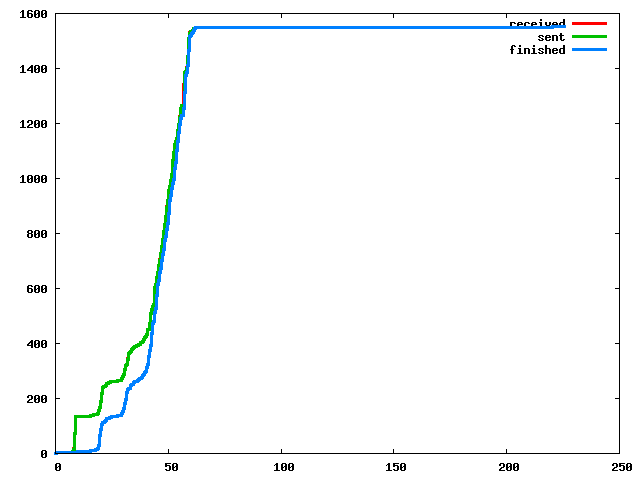
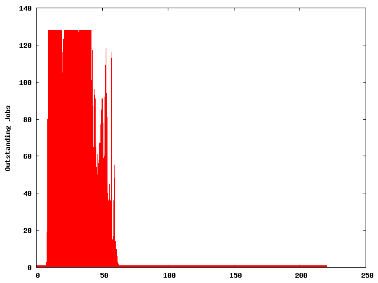
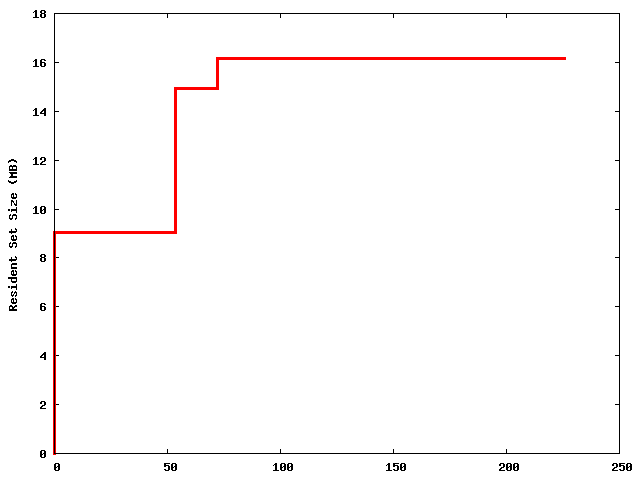
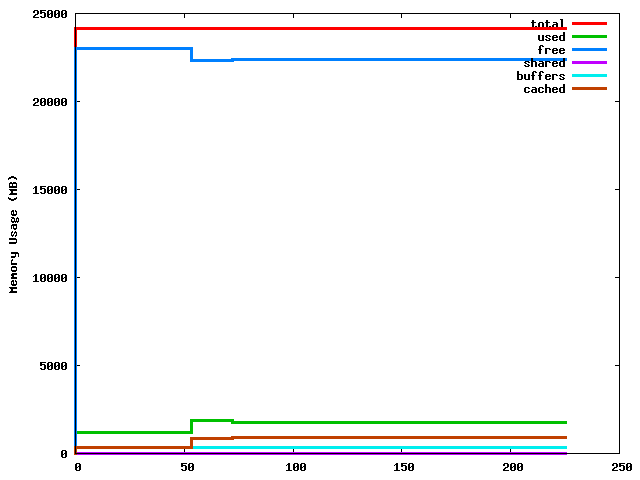
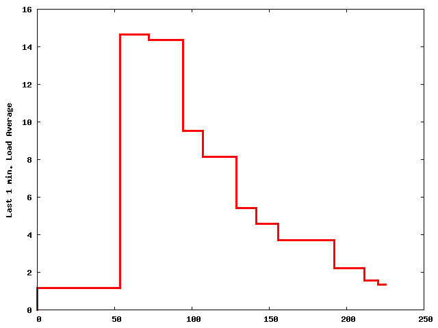

| sys_argv | ['/home/kabe/local/gxp3/gxp_js.py', 'make', 'INPUT=data2', '-B', 'all', '-j', '128', '--', '-a', 'state_dir=/home/kabe/public_html/jawc_pt_data2_128_2011-12-19_01'] |
| cwd | /data/local/kabe/workflow/fmpt/home/kabe/workflow/jawc/solvers/gxp_make |
| hostname | huscs001 |
| self_pid | 4091 |
| tid | tid-4091 |
| start_time | 2011-12-19 17:19:43 |
| current_time | 225.635 |
| n_runs_todo | 0 |
| n_runs_running | 0 |
| n_works | 1551 |
| n_free_men | 16 |
| final_status | exited 0 |
| gen_html_time | 0.534 |
| opts | --help 0 --attrs state_dir=/home/kabe/public_html/jawc_pt_data2_128_2011-12-19_01 --conf gxp_js.conf |
| work_file | [] |
| work_fd | [] |
| work_py_module | [] |
| work_proc_pipe | [] |
| work_proc_pipe2 | [] |
| work_proc_sock | [] |
| work_proc_sock2 | [] |
| work_server_sock | [] |
| work_server_sock2 | [] |
| work_db_type | text |
| worker_prof_cmd | ${GXP_DIR}/gxpbin/worker_prof |
| work_list_limit | 100 |
| state_dir | /home/kabe/public_html/jawc_pt_data2_128_2011-12-19_01 |
| template_html | ${GXP_DIR}/gxpbin/gxp_js_template.html |
| gen_html_overhead | 0.050 |
| refresh_interval | 60 |
| no_dispatch_after | inf |
| interrupt_at | inf |
| cpu_factor | 1.000 |
| mem_factor | 0.900 |
| translate_dir | [] |
| job_output | [1, 2] |
| make_cmd | make |
| gnu_parallel_cmd | parallel |
| make_exit_status_no_throw | 124 |
| make_exit_status_connect_failed | 125 |
| make_exit_status_server_died | 126 |
| make_local_exec_cmd | - |
| redirect_output | ??? |
| conf_file | gxp_js.conf |
| log_file | gxp_js.log |
| host_job_attrs | {('host', 'cpu'): [('.', <_sre.SRE_Pattern object at 0x26745d0>, 8)]} |
if the following image is broken, gnuplot may have gotten an error.
if the following image is broken, gnuplot may have gotten an error.
if the following image is broken, gnuplot may have gotten an error.
if the following image is broken, gnuplot may have gotten an error.
if the following image is broken, gnuplot may have gotten an error.
Remote start/end time includes time skew is between the master and workers. More precisely, these values are obtained by:
local time obtained by the worker who executed the job - local time obtained by the master at the start of the entire make.
| queued | running | success | failed | killed | worker_died | worker_left | no_throw | interrupted |
| active | leaving | gone |
| work_idx | cmd | run_idx | result | time_since_start | man_name | pid | dirs | time_req | time_start | time_end | worker_time_start | worker_time_end | worker_time | utime | stime | maxrss | ixrss | idrss | isrss | minflt | majflt | io | io_filename |
| work_idx | cmd | run_idx | result | time_since_start | man_name | pid | dirs | time_req | time_start | time_end | worker_time_start | worker_time_end | worker_time | utime | stime | maxrss | ixrss | idrss | isrss | minflt | majflt | io | io_filename |
| work_idx | cmd | run_idx | result | time_since_start | man_name | pid | dirs | time_req | time_start | time_end | worker_time_start | worker_time_end | worker_time | utime | stime | maxrss | ixrss | idrss | isrss | minflt | majflt | io | io_filename |
| 1549 | ./tfidf.py out/data2/page221m.dir/'*.tf' > out/data2/page221m.tfidf.csv | 0 | exit 0 | 158.175 | huscs004-kabe-2011-12-19-17-19-35-14826 | 13025 | ['/data/local/kabe/workflow/fmpt/home/kabe/workflow/jawc/solvers/gxp_make'] | 62.101 | 62.109 | 220.283 | 62.112 | 220.278 | 158.167 | 155.510 | 0.404 | 0 | 0 | 0 | 0 | 147930 | 0 | - | |
| 125 | ./html2sf.py out/data2/page221m.dir/0000112.html out/data2/page221m.dir/0000112.sf ;sync;sync;sync; | 0 | exit 0 | 33.707 | huscs003-kabe-2011-12-19-17-19-41-20677 | 4299 | ['/data/local/kabe/workflow/fmpt/home/kabe/workflow/jawc/solvers/gxp_make'] | 8.850 | 8.852 | 42.559 | 8.864 | 42.089 | 33.224 | 9.453 | 3.588 | 0 | 0 | 0 | 0 | 320265 | 42 | - | |
| 131 | ./html2sf.py out/data2/page221m.dir/0000116.html out/data2/page221m.dir/0000116.sf ;sync;sync;sync; | 0 | exit 0 | 33.216 | huscs003-kabe-2011-12-19-17-19-41-20677 | 4303 | ['/data/local/kabe/workflow/fmpt/home/kabe/workflow/jawc/solvers/gxp_make'] | 8.878 | 8.880 | 42.097 | 8.885 | 42.089 | 33.204 | 8.873 | 3.592 | 0 | 0 | 0 | 0 | 319751 | 13 | - | |
| 316 | ./html2sf.py out/data2/page221m.dir/0000311.html out/data2/page221m.dir/0000311.sf ;sync;sync;sync; | 0 | exit 0 | 27.345 | huscs003-kabe-2011-12-19-17-19-41-20677 | 9204 | ['/data/local/kabe/workflow/fmpt/home/kabe/workflow/jawc/solvers/gxp_make'] | 31.056 | 31.064 | 58.410 | 31.070 | 58.400 | 27.330 | 8.929 | 4.868 | 0 | 0 | 0 | 0 | 321468 | 3 | - | |
| 317 | ./html2sf.py out/data2/page221m.dir/0000312.html out/data2/page221m.dir/0000312.sf ;sync;sync;sync; | 0 | exit 0 | 27.181 | huscs003-kabe-2011-12-19-17-19-41-20677 | 9233 | ['/data/local/kabe/workflow/fmpt/home/kabe/workflow/jawc/solvers/gxp_make'] | 31.125 | 31.136 | 58.317 | 31.141 | 58.306 | 27.165 | 8.817 | 4.304 | 0 | 0 | 0 | 0 | 320971 | 14 | - | |
| 127 | ./html2sf.py out/data2/page221m.dir/0000124.html out/data2/page221m.dir/0000124.sf ;sync;sync;sync; | 0 | exit 0 | 26.526 | huscs003-kabe-2011-12-19-17-19-41-20677 | 4311 | ['/data/local/kabe/workflow/fmpt/home/kabe/workflow/jawc/solvers/gxp_make'] | 8.853 | 8.856 | 35.381 | 8.869 | 35.374 | 26.505 | 8.721 | 3.816 | 0 | 0 | 0 | 0 | 319279 | 26 | - | |
| 363 | ./html2sf.py out/data2/page221m.dir/0000357.html out/data2/page221m.dir/0000357.sf ;sync;sync;sync; | 0 | exit 0 | 25.736 | huscs003-kabe-2011-12-19-17-19-41-20677 | 9548 | ['/data/local/kabe/workflow/fmpt/home/kabe/workflow/jawc/solvers/gxp_make'] | 32.573 | 32.584 | 58.320 | 32.592 | 58.306 | 25.714 | 8.521 | 4.976 | 0 | 0 | 0 | 0 | 321244 | 1 | - | |
| 366 | ./html2sf.py out/data2/page221m.dir/0000361.html out/data2/page221m.dir/0000361.sf ;sync;sync;sync; | 0 | exit 0 | 25.431 | huscs003-kabe-2011-12-19-17-19-41-20677 | 9684 | ['/data/local/kabe/workflow/fmpt/home/kabe/workflow/jawc/solvers/gxp_make'] | 33.061 | 33.072 | 58.503 | 33.077 | 58.496 | 25.418 | 9.037 | 3.836 | 0 | 0 | 0 | 0 | 322228 | 17 | The following sentence has too much chars: 「それはこれから最終的に詰めなければならない大変大事なことだと思います。この臨時国会にどんな法案をあげるかと、出すかということと、会期というものが密接にからんでまいります。ご案内の通り、８日からでしょうか、（神奈川、静岡の参院）補欠選挙も行われるということであります。やはりこの補欠選挙も大変大きな国政選挙でありますから、その選挙というものを経てから臨時国会を開くということが一つの考え方としてはあると思いますが、まだタイミングとして決定しているわけではありません。特にこれは国対とよく相談申し上げながら、政府の考え方をしっかりと伝えて参りたい、そのように思います。当然いまどのような法案をこれから用意するかということでありますが、当然、え、やらなければならない、どうしても臨時国会を開いて、そこであげなければならない法案というものもあります。ま、給与の法案、そういったものでありますが、そういったもののほかに、何かこの臨時国会の中でやるべきかどうか、ということを考えていきたい。現在の経済状況をふまえながら、必要かどうかということを最終的に判断をして参りたい。まだ結論が出ているわけではありません。あした、あさって、え、私がまだ国内にいる間にですね、その方向というものを作り上げてまいりたい。そう思っております」 The following sentence has too much chars: 「私も総理になったときに、とにかく、官僚任せであった政治から、できるかぎり政治主導で国民のみなさんの声というものを大事にしながら、意思決定、政策決定をしていく、その政治主導の政治に変えていきたいということを申し上げました。そこには試行錯誤、必ずしもすぐに完璧（かんぺき）なものができるとは思いません。いろいろと試行錯誤の中でよりよい方向が見いだせていけると思いますが、まずこういった政策協議がそれぞれの役所の中で行われるということは、一つの新しいスタートだなと、そう思います。すなわち、今まではですね、党の考えと内閣・政府の考え方が必ずしもあわないような運営のやり方が意識的にあった。しかしそれはこれからは許されない。ということで基本的に政策というものは政府与党で一つなんだと、というようにしていきたい。そのためには役所の中で政策協議を、議員の方々も集まっていただいて、議論をして、そこで議員の皆様から様々な意見というものを出していただく。その意見を集約をして政府の中で意思決定、政策というものに仕上げていくと。そこに国民の皆さんの声というものが集約をされていくことになると思ってまして、一つの新しいやり方ですが、まずはスタートしたことを喜びたいと思いますし、みなさん方も少し時間をかけてですね、ご覧になっていただいて、よりスムーズなやり方に行くにはどうしたらいいのかと、いうようなことなどのアドバイスをいただければむしろありがたいと思います」 The following sentence has too much chars: 「うん、あの、表敬訪問ということで、まず政権がこのような劇的に変わったことに対して、ま、国民の皆さんに対する賛辞がありました。え、むしろ、そのあとですね、アフガン問題とかあるいは東アジア共同体の話がありましたが、表敬訪問だということで私の方からはそのことに対して自分の思いをそれなりに申し上げましたけれども、あまり深くつっこんだやりとりにすることはいたしませんでした。むしろ彼らからすれば別の機会にもう一度インタビューをしたいというような発言で終了いたしました」 The following sentence has too much chars: 「そういうことは一切ないと思います。すなわち、総務省からの申請書を入手したということ、このことに関しては最初の記者会見で申し上げて、こういう事があったということも話をしておりまして、それを、それに対して、新しいニュース性を持ったものではなかったと、いう風に考えております。すなわち、最初の記者会見の時に私も発言をしておりますし、これ以上のことも昨日も申し上げましたけれども、いま当局が捜査を始めている中で全面的に協力を申し上げますので、全容が解明されるのではないかと期待しております」 | - |
| 367 | ./html2sf.py out/data2/page221m.dir/0000362.html out/data2/page221m.dir/0000362.sf ;sync;sync;sync; | 0 | exit 0 | 25.315 | huscs003-kabe-2011-12-19-17-19-41-20677 | 9704 | ['/data/local/kabe/workflow/fmpt/home/kabe/workflow/jawc/solvers/gxp_make'] | 33.145 | 33.152 | 58.467 | 33.158 | 58.457 | 25.299 | 8.821 | 4.588 | 0 | 0 | 0 | 0 | 321573 | 7 | The following sentence has too much chars: 「（大企業は）従業員を正社員からパートや派遣労働に切り替え、安く使えればいいということをやってきた。人間を、自分たちが利益を得るための道具としか考えないような風潮があり、社会の風潮もそうなる。人間関係がばらばらになり、家族という助け合いの核も崩壊していっちゃう。改革と称する極端な市場原理、市場主義が始まって以来、家族の崩壊、家族間の殺し合いが増えてきた。そういう風潮をつくったという意味で、（経団連に）責任があると言った」（６日、閣議後の記者会見で） | - |
| 126 | ./html2sf.py out/data2/page221m.dir/0000082.html out/data2/page221m.dir/0000082.sf ;sync;sync;sync; | 0 | exit 0 | 24.260 | huscs003-kabe-2011-12-19-17-19-41-20677 | 4268 | ['/data/local/kabe/workflow/fmpt/home/kabe/workflow/jawc/solvers/gxp_make'] | 8.853 | 8.853 | 33.113 | 8.867 | 33.108 | 24.241 | 9.873 | 3.568 | 0 | 0 | 0 | 0 | 321900 | 24 | - | |
| 132 | ./html2sf.py out/data2/page221m.dir/0000104.html out/data2/page221m.dir/0000104.sf ;sync;sync;sync; | 0 | exit 0 | 24.137 | huscs003-kabe-2011-12-19-17-19-41-20677 | 4291 | ['/data/local/kabe/workflow/fmpt/home/kabe/workflow/jawc/solvers/gxp_make'] | 8.881 | 8.892 | 33.029 | 8.897 | 33.023 | 24.126 | 9.041 | 3.284 | 0 | 0 | 0 | 0 | 320225 | 13 | - | |
| 130 | ./html2sf.py out/data2/page221m.dir/0000121.html out/data2/page221m.dir/0000121.sf ;sync;sync;sync; | 0 | exit 0 | 23.657 | huscs003-kabe-2011-12-19-17-19-41-20677 | 4308 | ['/data/local/kabe/workflow/fmpt/home/kabe/workflow/jawc/solvers/gxp_make'] | 8.866 | 8.876 | 32.533 | 8.881 | 32.525 | 23.644 | 9.565 | 2.228 | 0 | 0 | 0 | 0 | 321075 | 25 | - | |
| 384 | ./html2sf.py out/data2/page221m.dir/0000379.html out/data2/page221m.dir/0000379.sf ;sync;sync;sync; | 0 | exit 0 | 22.510 | huscs001-kabe-2011-12-19-17-19-35-4010 | 9974 | ['/data/local/kabe/workflow/fmpt/home/kabe/workflow/jawc/solvers/gxp_make'] | 34.708 | 34.708 | 57.218 | 34.710 | 57.211 | 22.501 | 9.713 | 1.124 | 0 | 0 | 0 | 0 | 321466 | 0 | - | |
| 383 | ./html2sf.py out/data2/page221m.dir/0000378.html out/data2/page221m.dir/0000378.sf ;sync;sync;sync; | 0 | exit 0 | 22.397 | huscs001-kabe-2011-12-19-17-19-35-4010 | 9968 | ['/data/local/kabe/workflow/fmpt/home/kabe/workflow/jawc/solvers/gxp_make'] | 34.684 | 34.693 | 57.090 | 34.694 | 57.088 | 22.393 | 9.529 | 1.236 | 0 | 0 | 0 | 0 | 321566 | 0 | - | |
| 128 | ./html2sf.py out/data2/page221m.dir/0000084.html out/data2/page221m.dir/0000084.sf ;sync;sync;sync; | 0 | exit 0 | 22.229 | huscs003-kabe-2011-12-19-17-19-41-20677 | 4270 | ['/data/local/kabe/workflow/fmpt/home/kabe/workflow/jawc/solvers/gxp_make'] | 8.857 | 8.858 | 31.086 | 8.872 | 31.080 | 22.208 | 9.605 | 2.184 | 0 | 0 | 0 | 0 | 320859 | 24 | - | |
| 386 | ./html2sf.py out/data2/page221m.dir/0000381.html out/data2/page221m.dir/0000381.sf ;sync;sync;sync; | 0 | exit 0 | 22.209 | huscs001-kabe-2011-12-19-17-19-35-4010 | 9988 | ['/data/local/kabe/workflow/fmpt/home/kabe/workflow/jawc/solvers/gxp_make'] | 34.740 | 34.748 | 56.957 | 34.751 | 56.626 | 21.875 | 9.653 | 1.216 | 0 | 0 | 0 | 0 | 322140 | 0 | - | |
| 129 | ./html2sf.py out/data2/page221m.dir/0000127.html out/data2/page221m.dir/0000127.sf ;sync;sync;sync; | 0 | exit 0 | 22.151 | huscs003-kabe-2011-12-19-17-19-41-20677 | 4315 | ['/data/local/kabe/workflow/fmpt/home/kabe/workflow/jawc/solvers/gxp_make'] | 8.858 | 8.865 | 31.015 | 8.874 | 30.997 | 22.123 | 8.665 | 3.428 | 0 | 0 | 0 | 0 | 319508 | 14 | - | |
| 385 | ./html2sf.py out/data2/page221m.dir/0000380.html out/data2/page221m.dir/0000380.sf ;sync;sync;sync; | 0 | exit 0 | 20.908 | huscs001-kabe-2011-12-19-17-19-35-4010 | 9984 | ['/data/local/kabe/workflow/fmpt/home/kabe/workflow/jawc/solvers/gxp_make'] | 34.725 | 34.732 | 55.641 | 34.734 | 55.626 | 20.892 | 8.757 | 1.200 | 0 | 0 | 0 | 0 | 320573 | 0 | - | |
| 5 | ./html2sf.py out/data2/page221m.dir/0000000.html out/data2/page221m.dir/0000000.sf ;sync;sync;sync; | 0 | exit 0 | 17.225 | huscs001-kabe-2011-12-19-17-19-35-4010 | 4186 | ['/data/local/kabe/workflow/fmpt/home/kabe/workflow/jawc/solvers/gxp_make'] | 7.532 | 7.540 | 24.765 | 7.542 | 24.762 | 17.220 | 12.409 | 1.260 | 0 | 0 | 0 | 0 | 317863 | 0 | Cannot guess character encoding. /tmp/tmpHMief2.html - UTF-8 �Ѵ��Ǽ��Ԥ��ޤ��� | - |
| 389 | ./html2sf.py out/data2/page221m.dir/0000383.html out/data2/page221m.dir/0000383.sf ;sync;sync;sync; | 0 | exit 0 | 16.665 | huscs003-kabe-2011-12-19-17-19-41-20677 | 10158 | ['/data/local/kabe/workflow/fmpt/home/kabe/workflow/jawc/solvers/gxp_make'] | 35.553 | 35.560 | 52.225 | 35.566 | 52.221 | 16.654 | 2.468 | 2.168 | 0 | 0 | 0 | 0 | 152901 | 25 | Cannot guess character encoding. /tmp/tmp1v6ww6.html - UTF-8 �Ѵ��Ǽ��Ԥ��ޤ��� Cannot guess character encoding. /tmp/tmp1L79XR.html - UTF-8 �Ѵ��Ǽ��Ԥ��ޤ��� Cannot guess character encoding. /tmp/tmpQ8wsPX.html - UTF-8 �Ѵ��Ǽ��Ԥ��ޤ��� Cannot guess character encoding. /tmp/tmpQxQl5-.html - UTF-8 �Ѵ��Ǽ��Ԥ��ޤ��� Cannot guess character encoding. /tmp/tmp-WKNYT.html - UTF-8 �Ѵ��Ǽ��Ԥ��ޤ��� Cannot guess character encoding. /tmp/tmplsS48U.html - UTF-8 �Ѵ��Ǽ��Ԥ��ޤ��� Cannot guess character encoding. /tmp/tmpnhioQj.html - UTF-8 �Ѵ��Ǽ��Ԥ��ޤ��� Cannot guess character encoding. /tmp/tmp4hhqIy.html - UTF-8 �Ѵ��Ǽ��Ԥ��ޤ��� Cannot guess character encoding. /tmp/tmpNV4T7C.html - UTF-8 �Ѵ��Ǽ��Ԥ��ޤ��� Cannot guess character encoding. /tmp/tmpVKr6pi.html - UTF-8 �Ѵ��Ǽ��Ԥ��ޤ��� Cannot guess character encoding. /tmp/tmpk-xIID.html - UTF-8 �Ѵ��Ǽ��Ԥ��ޤ��� Cannot guess character encoding. /tmp/tmp8uTu-d.html - UTF-8 �Ѵ��Ǽ��Ԥ��ޤ��� Cannot guess character encoding. /tmp/tmpPR9M3W.html - UTF-8 �Ѵ��Ǽ��Ԥ��ޤ��� Cannot guess character encoding. /tmp/tmplHhd29.html - UTF-8 �Ѵ��Ǽ��Ԥ��ޤ��� Cannot guess character encoding. /tmp/tmpKhnB29.html - UTF-8 �Ѵ��Ǽ��Ԥ��ޤ��� Cannot guess character encoding. /tmp/tmpNxjkAD.html - UTF-8 �Ѵ��Ǽ��Ԥ��ޤ��� | - |
| 10 | ./html2sf.py out/data2/page221m.dir/0000004.html out/data2/page221m.dir/0000004.sf ;sync;sync;sync; | 0 | exit 0 | 15.781 | huscs001-kabe-2011-12-19-17-19-35-4010 | 4190 | ['/data/local/kabe/workflow/fmpt/home/kabe/workflow/jawc/solvers/gxp_make'] | 8.054 | 8.064 | 23.845 | 8.066 | 23.840 | 15.774 | 11.461 | 1.192 | 0 | 0 | 0 | 0 | 327350 | 0 | The following sentence has too much chars: 「わたくしはきょう１日が命を大事にする１日だと、そういう風に感じました。こちらはまさに命をよみがえらせると。再生医療、こう未来に大変夢のある医療の研究、そしてこの研究したものを、技術を生かすという、命を生かすというために使う。そのための最先端の医療の研究をされていること、大変頼もしく感じました。まさに阪神淡路大震災のあと、大きな命が奪われた、この中でね、命を再生させる技術を展開されているということに大きな希望を感じました。大変勉強になりましたし、ほんとはこういう話、好きなもんですから、もっとずっといたいなという思いがありました」 | - |
| 7 | ./html2sf.py out/data2/page221m.dir/0000001.html out/data2/page221m.dir/0000001.sf ;sync;sync;sync; | 0 | exit 0 | 15.731 | huscs001-kabe-2011-12-19-17-19-35-4010 | 4187 | ['/data/local/kabe/workflow/fmpt/home/kabe/workflow/jawc/solvers/gxp_make'] | 7.783 | 7.792 | 23.523 | 7.794 | 23.519 | 15.725 | 11.565 | 1.068 | 0 | 0 | 0 | 0 | 317146 | 0 | Cannot guess character encoding. /tmp/tmpbY9_cx.html - UTF-8 �Ѵ��Ǽ��Ԥ��ޤ��� | - |
| 9 | ./html2sf.py out/data2/page221m.dir/0000005.html out/data2/page221m.dir/0000005.sf ;sync;sync;sync; | 0 | exit 0 | 14.643 | huscs001-kabe-2011-12-19-17-19-35-4010 | 4191 | ['/data/local/kabe/workflow/fmpt/home/kabe/workflow/jawc/solvers/gxp_make'] | 8.019 | 8.028 | 22.671 | 8.030 | 22.668 | 14.638 | 10.697 | 1.056 | 0 | 0 | 0 | 0 | 305490 | 0 | Cannot guess character encoding. /tmp/tmpdGx82I.html - UTF-8 �Ѵ��Ǽ��Ԥ��ޤ��� Cannot guess character encoding. /tmp/tmpI5FkNi.html - UTF-8 �Ѵ��Ǽ��Ԥ��ޤ��� | - |
| 27 | ./html2sf.py out/data2/page221m.dir/0000028.html out/data2/page221m.dir/0000028.sf ;sync;sync;sync; | 0 | exit 0 | 14.578 | huscs004-kabe-2011-12-19-17-19-35-14826 | 4214 | ['/data/local/kabe/workflow/fmpt/home/kabe/workflow/jawc/solvers/gxp_make'] | 8.322 | 8.332 | 22.910 | 8.336 | 22.903 | 14.567 | 12.289 | 1.036 | 0 | 0 | 0 | 0 | 326926 | 0 | - | |
| 8 | ./html2sf.py out/data2/page221m.dir/0000002.html out/data2/page221m.dir/0000002.sf ;sync;sync;sync; | 0 | exit 0 | 14.419 | huscs001-kabe-2011-12-19-17-19-35-4010 | 4188 | ['/data/local/kabe/workflow/fmpt/home/kabe/workflow/jawc/solvers/gxp_make'] | 7.956 | 7.968 | 22.387 | 7.970 | 22.383 | 14.414 | 10.409 | 0.940 | 0 | 0 | 0 | 0 | 295792 | 0 | Cannot guess character encoding. /tmp/tmpoMgEWP.html - UTF-8 �Ѵ��Ǽ��Ԥ��ޤ��� Cannot guess character encoding. /tmp/tmptAyQiF.html - UTF-8 �Ѵ��Ǽ��Ԥ��ޤ��� Cannot guess character encoding. /tmp/tmpkUxVKW.html - UTF-8 �Ѵ��Ǽ��Ԥ��ޤ��� | - |
| 11 | ./html2sf.py out/data2/page221m.dir/0000039.html out/data2/page221m.dir/0000039.sf ;sync;sync;sync; | 0 | exit 0 | 14.278 | huscs001-kabe-2011-12-19-17-19-35-4010 | 4225 | ['/data/local/kabe/workflow/fmpt/home/kabe/workflow/jawc/solvers/gxp_make'] | 8.105 | 8.118 | 22.396 | 8.120 | 22.395 | 14.275 | 10.525 | 1.136 | 0 | 0 | 0 | 0 | 325257 | 0 | - | |
| 233 | ./html2sf.py out/data2/page221m.dir/0000231.html out/data2/page221m.dir/0000231.sf ;sync;sync;sync; | 0 | exit 0 | 13.815 | huscs001-kabe-2011-12-19-17-19-35-4010 | 6821 | ['/data/local/kabe/workflow/fmpt/home/kabe/workflow/jawc/solvers/gxp_make'] | 20.829 | 20.830 | 34.645 | 20.832 | 34.642 | 13.810 | 10.001 | 1.140 | 0 | 0 | 0 | 0 | 322874 | 0 | - | |
| 42 | ./html2sf.py out/data2/page221m.dir/0000029.html out/data2/page221m.dir/0000029.sf ;sync;sync;sync; | 0 | exit 0 | 13.784 | huscs006-kabe-2011-12-19-17-19-35-16932 | 4215 | ['/data/local/kabe/workflow/fmpt/home/kabe/workflow/jawc/solvers/gxp_make'] | 8.474 | 8.484 | 22.268 | 8.488 | 22.262 | 13.774 | 11.405 | 0.988 | 0 | 0 | 0 | 0 | 326341 | 0 | - | |
| 109 | ./html2sf.py out/data2/page221m.dir/0000037.html out/data2/page221m.dir/0000037.sf ;sync;sync;sync; | 0 | exit 0 | 13.666 | huscs007-kabe-2011-12-19-17-19-36-18551 | 4223 | ['/data/local/kabe/workflow/fmpt/home/kabe/workflow/jawc/solvers/gxp_make'] | 8.801 | 8.802 | 22.468 | 8.819 | 22.440 | 13.621 | 11.265 | 0.928 | 0 | 0 | 0 | 0 | 325167 | 0 | The following sentence has too much chars: 「これは、小沢幹事長としては、自分は法令に反していることはないと。したがって、ちゃんとしっかり幹事長職をがんばってやり抜くという思いでありましたから、私もそのことを信頼しています。私はまず昨夜ですね、石川（知裕）議員、私どもの同僚議員が、このような形で逮捕という事態になったということを大変驚いておりますし、驚くと同時に、国民のみなさんにご心配をおかけして、またご迷惑をおかけしていることに対しては、心から遺憾の意を表明をしたいと思っています。ただやはりこれは今、捜査中の話であるということでありますから、私としては、捜査に関しては冷静に見守っていくしかないと、そのように思っています。今申し上げたように、小沢幹事長と今日お話をしました。小沢幹事長は身の潔白、自らを信じているということであります。従って、私もそのことを信じておるということであります。そのことに関して、党大会でしっかりと私も申し上げますし、小沢幹事長にも話をしていただく」 The following sentence has too much chars: ばかりですけれども、いわゆる私どもの事務所でも、収支報告の計算間違いや、あるいは記載の間違いはあったとは思います。しかし、それは、まさに形式的なことであって、旧来、ほとんどの例では、訂正報告、修正報告でもって許されてきたものであります。ま、ところが、私の政治団体の問題については、昨年の大久保の逮捕も突然、呼びだされ、突然逮捕された、という経過をたどって、今日まで来ておりますので、私としては、そういう権力の行使のあり方は納得できない。非常に問題であると。国民の皆さんにおわび申し上げると同時に、民主主義国家として、こういうやり方がまかり通るべきではない。そう思っております」 | - |
| 253 | ./html2sf.py out/data2/page221m.dir/0000248.html out/data2/page221m.dir/0000248.sf ;sync;sync;sync; | 0 | exit 0 | 13.618 | huscs001-kabe-2011-12-19-17-19-35-4010 | 7209 | ['/data/local/kabe/workflow/fmpt/home/kabe/workflow/jawc/solvers/gxp_make'] | 22.704 | 22.716 | 36.334 | 22.718 | 36.332 | 13.614 | 9.625 | 1.180 | 0 | 0 | 0 | 0 | 321291 | 0 | The following sentence has too much chars: 「ＪＡＬ問題に関しては、これは今日、確かに閣僚の皆さんが来られました。閣僚の皆さま方が意見交換をした程度でありまして、詳細に関して、ま、申し上げるような段階ではありません。当然、一企業でありますし、前原大臣はいろいろと、おー、考えなきゃならないことあるけれども、しかし現実に日本の上空の６割がＪＡＬの飛行機が飛んでいるという現実があるんで、それが、あー、もし飛ばないような状況になったらそれも大変なことだと。そういったことを理解しながら、しかし、厳しい状況をどうやって、彼らがですね、乗り越えていくかと、あるいは結論を出すか、いうことで意見交換を今日は行った件であります。それ以上のことを、おー、申し上げる段階でもありませんし、申し上げる内容もありません」 The following sentence has too much chars: 「わたくしは、いわゆる開かれた地域主義という思いのもとで、東アジア、私ども、アジアの一国ですから、いままでアジアに対する思いというものが、あー、必ずしもですね、強くなかったところがあるんじゃないかと、アジアの一国として果たすべき役割があるのではないかと、その一つが東アジアに対して、これは長期的なビジョンの中ですけれど、共同体というイメージで構想すると、いうことが重要ではないかと。その思いをひっさげてですね、今回ＡＳＥＡＮに赴くことになりました。ＡＳＥＡＮはご案内の通り、国ごとにですね、かなり経済的な格差があります。したがって格差というものを是正するために日本も期待をされています。役割は何かと見つめてまいりたいし、あるいは彼ら自身の成長というものに対して日本がどういう役割を果たすかということ。また、あわせてこのＡＳＥＡＮは、ＡＳＥＡＮ＋３（日中韓）とかですね、将来的にはＡＰＥＣ（アジア太平洋経済協力会議）というものも別にあるわけですけれど、様々な重層的な仕組みができているわけですから、そんな中で彼らが共同で日本に対して何を期待しているのか、例えばそれが経済なのか、貿易なのか、あるいは教育なのか、あるいは、あー、例えば防災といった方面なのか、あるいは地球環境の問題なのか、そういった様々なテーマに対して協力関係というものを彼らが構築していく中で、日本の役割を考えていくことは、わたしは大変意義のあることだと思って、非常に興味深く、今回会議に参加をしてまいりたいと、そのように思っております」 | - |
| 97 | ./html2sf.py out/data2/page221m.dir/0000024.html out/data2/page221m.dir/0000024.sf ;sync;sync;sync; | 0 | exit 0 | 13.614 | huscs015-kabe-2011-12-19-17-19-36-22207 | 4210 | ['/data/local/kabe/workflow/fmpt/home/kabe/workflow/jawc/solvers/gxp_make'] | 8.776 | 8.780 | 22.394 | 8.798 | 22.380 | 13.582 | 11.085 | 0.976 | 0 | 0 | 0 | 0 | 326273 | 0 | - | |
| 12 | ./html2sf.py out/data2/page221m.dir/0000008.html out/data2/page221m.dir/0000008.sf ;sync;sync;sync; | 0 | exit 0 | 13.531 | huscs001-kabe-2011-12-19-17-19-35-4010 | 4194 | ['/data/local/kabe/workflow/fmpt/home/kabe/workflow/jawc/solvers/gxp_make'] | 8.123 | 8.129 | 21.660 | 8.131 | 21.658 | 13.527 | 9.405 | 1.092 | 0 | 0 | 0 | 0 | 322479 | 0 | - | |
| 255 | ./html2sf.py out/data2/page221m.dir/0000250.html out/data2/page221m.dir/0000250.sf ;sync;sync;sync; | 0 | exit 0 | 13.172 | huscs001-kabe-2011-12-19-17-19-35-4010 | 7380 | ['/data/local/kabe/workflow/fmpt/home/kabe/workflow/jawc/solvers/gxp_make'] | 23.570 | 23.580 | 36.752 | 23.582 | 36.747 | 13.165 | 9.337 | 1.176 | 0 | 0 | 0 | 0 | 321651 | 0 | - | |
| 74 | ./html2sf.py out/data2/page221m.dir/0000038.html out/data2/page221m.dir/0000038.sf ;sync;sync;sync; | 0 | exit 0 | 13.017 | huscs014-kabe-2011-12-19-17-19-35-13181 | 4224 | ['/data/local/kabe/workflow/fmpt/home/kabe/workflow/jawc/solvers/gxp_make'] | 8.652 | 8.653 | 21.670 | 8.657 | 21.664 | 13.007 | 10.521 | 0.892 | 0 | 0 | 0 | 0 | 324418 | 0 | The following sentence has too much chars: 「まだ会社更生法が適用になったというわけではありません。仮定のご質問には答えるべきではないと思います。前原大臣に私が申し上げたのは、これは例えば総理が判断すべきことと、総理の判断ではない、これは機構が判断すべきこととは分けて考える必要があると思っておりまして、えーどういう支援をするかという話は、ま、ＪＡＬがまずそのことをどのように、機構にお願いをするか、それに対して機構がどう答えるかによって変わる話ですから、まだ私の判断すべき話ではないということで、前原大臣には申し上げました。従いましてこれ以上、私が仮定の話にお答えする話ではないと、むしろそう思います」 | - |
| 6 | ./html2sf.py out/data2/page221m.dir/0000003.html out/data2/page221m.dir/0000003.sf ;sync;sync;sync; | 0 | exit 0 | 13.012 | huscs001-kabe-2011-12-19-17-19-35-4010 | 4189 | ['/data/local/kabe/workflow/fmpt/home/kabe/workflow/jawc/solvers/gxp_make'] | 7.637 | 7.648 | 20.660 | 7.649 | 20.623 | 12.974 | 8.941 | 0.948 | 0 | 0 | 0 | 0 | 273876 | 0 | Cannot guess character encoding. /tmp/tmp9set99.html - UTF-8 �Ѵ��Ǽ��Ԥ��ޤ��� Cannot guess character encoding. /tmp/tmpJiuUJY.html - UTF-8 �Ѵ��Ǽ��Ԥ��ޤ��� Cannot guess character encoding. /tmp/tmp3dJH0I.html - UTF-8 �Ѵ��Ǽ��Ԥ��ޤ��� Cannot guess character encoding. /tmp/tmpttks3v.html - UTF-8 �Ѵ��Ǽ��Ԥ��ޤ��� Cannot guess character encoding. /tmp/tmpG05n06.html - UTF-8 �Ѵ��Ǽ��Ԥ��ޤ��� | - |
| 260 | ./html2sf.py out/data2/page221m.dir/0000255.html out/data2/page221m.dir/0000255.sf ;sync;sync;sync; | 0 | exit 0 | 12.991 | huscs001-kabe-2011-12-19-17-19-35-4010 | 7651 | ['/data/local/kabe/workflow/fmpt/home/kabe/workflow/jawc/solvers/gxp_make'] | 24.792 | 24.804 | 37.795 | 24.805 | 37.793 | 12.988 | 9.325 | 1.220 | 0 | 0 | 0 | 0 | 321216 | 0 | - | |
| 28 | ./html2sf.py out/data2/page221m.dir/0000022.html out/data2/page221m.dir/0000022.sf ;sync;sync;sync; | 0 | exit 0 | 12.854 | huscs004-kabe-2011-12-19-17-19-35-14826 | 4208 | ['/data/local/kabe/workflow/fmpt/home/kabe/workflow/jawc/solvers/gxp_make'] | 8.342 | 8.346 | 21.201 | 8.352 | 21.193 | 12.841 | 10.521 | 0.932 | 0 | 0 | 0 | 0 | 313143 | 0 | Cannot guess character encoding. /tmp/tmpGb6Yaw.html - UTF-8 �Ѵ��Ǽ��Ԥ��ޤ��� | - |
| 243 | ./html2sf.py out/data2/page221m.dir/0000238.html out/data2/page221m.dir/0000238.sf ;sync;sync;sync; | 0 | exit 0 | 12.744 | huscs001-kabe-2011-12-19-17-19-35-4010 | 7001 | ['/data/local/kabe/workflow/fmpt/home/kabe/workflow/jawc/solvers/gxp_make'] | 21.926 | 21.936 | 34.680 | 21.938 | 34.677 | 12.739 | 9.297 | 1.156 | 0 | 0 | 0 | 0 | 321680 | 0 | - | |
| 190 | ./html2sf.py out/data2/page221m.dir/0000189.html out/data2/page221m.dir/0000189.sf ;sync;sync;sync; | 0 | exit 0 | 12.593 | huscs004-kabe-2011-12-19-17-19-35-14826 | 6674 | ['/data/local/kabe/workflow/fmpt/home/kabe/workflow/jawc/solvers/gxp_make'] | 20.212 | 20.217 | 32.810 | 20.224 | 32.804 | 12.580 | 10.389 | 0.940 | 0 | 0 | 0 | 0 | 321834 | 0 | - | |
| 16 | ./html2sf.py out/data2/page221m.dir/0000006.html out/data2/page221m.dir/0000006.sf ;sync;sync;sync; | 0 | exit 0 | 12.466 | huscs018-kabe-2011-12-19-17-19-35-6135 | 4192 | ['/data/local/kabe/workflow/fmpt/home/kabe/workflow/jawc/solvers/gxp_make'] | 8.193 | 8.204 | 20.671 | 8.209 | 20.636 | 12.428 | 10.361 | 0.908 | 0 | 0 | 0 | 0 | 315981 | 0 | Cannot guess character encoding. /tmp/tmpskAi3P.html - UTF-8 �Ѵ��Ǽ��Ԥ��ޤ��� | - |
| 257 | ./html2sf.py out/data2/page221m.dir/0000252.html out/data2/page221m.dir/0000252.sf ;sync;sync;sync; | 0 | exit 0 | 12.427 | huscs001-kabe-2011-12-19-17-19-35-4010 | 7457 | ['/data/local/kabe/workflow/fmpt/home/kabe/workflow/jawc/solvers/gxp_make'] | 23.888 | 23.893 | 36.320 | 23.894 | 36.317 | 12.422 | 8.873 | 1.160 | 0 | 0 | 0 | 0 | 320992 | 0 | - | |
| 242 | ./html2sf.py out/data2/page221m.dir/0000237.html out/data2/page221m.dir/0000237.sf ;sync;sync;sync; | 0 | exit 0 | 12.360 | huscs004-kabe-2011-12-19-17-19-35-14826 | 7000 | ['/data/local/kabe/workflow/fmpt/home/kabe/workflow/jawc/solvers/gxp_make'] | 21.925 | 21.936 | 34.296 | 21.943 | 34.290 | 12.347 | 9.809 | 0.860 | 0 | 0 | 0 | 0 | 321274 | 0 | - | |
| 24 | ./html2sf.py out/data2/page221m.dir/0000059.html out/data2/page221m.dir/0000059.sf ;sync;sync;sync; | 0 | exit 0 | 12.312 | huscs004-kabe-2011-12-19-17-19-35-14826 | 4245 | ['/data/local/kabe/workflow/fmpt/home/kabe/workflow/jawc/solvers/gxp_make'] | 8.288 | 8.296 | 20.608 | 8.301 | 20.601 | 12.300 | 10.353 | 0.856 | 0 | 0 | 0 | 0 | 322904 | 0 | - | |
| 249 | ./html2sf.py out/data2/page221m.dir/0000243.html out/data2/page221m.dir/0000243.sf ;sync;sync;sync; | 0 | exit 0 | 12.262 | huscs001-kabe-2011-12-19-17-19-35-4010 | 7137 | ['/data/local/kabe/workflow/fmpt/home/kabe/workflow/jawc/solvers/gxp_make'] | 22.436 | 22.444 | 34.706 | 22.447 | 34.703 | 12.256 | 9.441 | 1.136 | 0 | 0 | 0 | 0 | 321404 | 0 | The following sentence has too much chars: 【団体】北海道夕張市立千代田中▽北海道岩見沢市立光陵中▽青森県立大間高▽秋田県にかほ市立小出小▽神奈川県立横須賀高▽静岡県沼津市立大岡中▽愛知県名城大付属高▽福井県坂井市立丸岡中▽大阪府高槻市立清水小▽大阪府東大阪市立孔舎衙中▽兵庫県高砂市立高砂中▽兵庫県神戸山手女子中高▽和歌山県立古佐田丘中▽岡山県山陽女子高▽松江市立玉湯中▽島根県大田市立第一中▽徳島市立富田小▽香川県観音寺市立観音寺中▽愛媛県今治市立鳥生小▽福岡県宗像市立中央中▽福岡教育大付属小倉中▽宮崎県高千穂町立高千穂中 | - |
| 13 | ./html2sf.py out/data2/page221m.dir/0000007.html out/data2/page221m.dir/0000007.sf ;sync;sync;sync; | 0 | exit 0 | 12.261 | huscs018-kabe-2011-12-19-17-19-35-6135 | 4193 | ['/data/local/kabe/workflow/fmpt/home/kabe/workflow/jawc/solvers/gxp_make'] | 8.129 | 8.135 | 20.396 | 8.140 | 20.391 | 12.252 | 9.989 | 0.924 | 0 | 0 | 0 | 0 | 324104 | 0 | - | |
| 69 | ./html2sf.py out/data2/page221m.dir/0000030.html out/data2/page221m.dir/0000030.sf ;sync;sync;sync; | 0 | exit 0 | 12.258 | huscs014-kabe-2011-12-19-17-19-35-13181 | 4216 | ['/data/local/kabe/workflow/fmpt/home/kabe/workflow/jawc/solvers/gxp_make'] | 8.622 | 8.625 | 20.884 | 8.631 | 20.879 | 12.248 | 10.041 | 0.936 | 0 | 0 | 0 | 0 | 323750 | 0 | - | |
| 248 | ./html2sf.py out/data2/page221m.dir/0000244.html out/data2/page221m.dir/0000244.sf ;sync;sync;sync; | 0 | exit 0 | 12.235 | huscs001-kabe-2011-12-19-17-19-35-4010 | 7138 | ['/data/local/kabe/workflow/fmpt/home/kabe/workflow/jawc/solvers/gxp_make'] | 22.431 | 22.435 | 34.670 | 22.437 | 34.664 | 12.227 | 8.745 | 1.076 | 0 | 0 | 0 | 0 | 320824 | 0 | The following sentence has too much chars: 「基本的には、この１０カ月の間、経済災害、うーん、経済災害って言葉がいいかどうか知りませんが、アメリカ発の今回の大きな経済危機に対応してきた、四度の経済対策を目的とした予算編成、またそういったものの実績と全治３年と申し上げてきてますんで、その全治３年の１０カ月が経過したところですけれども、その後、３年たった先、どういう社会というものを我々は考えているのかということも、安心社会実現会議などなど、いろいろ説明はしてきましたけれども、きちんとそういった話を、党員・党友はもちろんのこと、地域の皆様方に説明できる機会を与えていただいたもんだと思っています」 The following sentence has too much chars: 「戦略の違いだと思います。各党が、各党の選挙対策というものを考えてきちんとやっておられる。そういう意味にたって、街頭遊説から始められる政党もあれば、私たちのように、これまでご支援いただいた支援団体に我々の政策、またこれまでの我々のやってきた実績をきちんと説明して、ご支援ご理解いただく。やり方の違いだと思いますんで、今いただいております、あちらこちらからの応援依頼っていうのを、きちんと整理していかないかんところだと思っていますんで、応援依頼がないっ（語気を強める）というのでは、少し違うと思います」 | - |
| 361 | ./html2sf.py out/data2/page221m.dir/0000356.html out/data2/page221m.dir/0000356.sf ;sync;sync;sync; | 0 | exit 0 | 12.196 | huscs012-kabe-2011-12-19-17-19-35-4399 | 9547 | ['/data/local/kabe/workflow/fmpt/home/kabe/workflow/jawc/solvers/gxp_make'] | 32.566 | 32.570 | 44.766 | 32.574 | 44.757 | 12.183 | 10.197 | 0.860 | 0 | 0 | 0 | 0 | 323656 | 0 | - | |
| 22 | ./html2sf.py out/data2/page221m.dir/0000071.html out/data2/page221m.dir/0000071.sf ;sync;sync;sync; | 0 | exit 0 | 12.189 | huscs004-kabe-2011-12-19-17-19-35-14826 | 4257 | ['/data/local/kabe/workflow/fmpt/home/kabe/workflow/jawc/solvers/gxp_make'] | 8.281 | 8.284 | 20.473 | 8.288 | 20.465 | 12.177 | 9.853 | 0.876 | 0 | 0 | 0 | 0 | 320977 | 0 | - | |
| 263 | ./html2sf.py out/data2/page221m.dir/0000258.html out/data2/page221m.dir/0000258.sf ;sync;sync;sync; | 0 | exit 0 | 12.152 | huscs008-kabe-2011-12-19-17-19-36-4042 | 8318 | ['/data/local/kabe/workflow/fmpt/home/kabe/workflow/jawc/solvers/gxp_make'] | 27.425 | 27.436 | 39.588 | 27.445 | 39.569 | 12.124 | 9.521 | 0.932 | 0 | 0 | 0 | 0 | 320941 | 0 | The following sentence has too much chars: 「そうですね、土石流だとか、こういう大きな災害、昔は山津波とか、土石流って言う言葉は、昔は無かった言葉で、昔は山津波とか鉄砲水とかいったんですけれども、これだけ大きなものが、なに、流れてくるっていうか、れきとして、れきっていうのは石、石のことですけれども、れきとして、流れてくるていう状況っていうのは、なかなかこれはちょっと直撃してますんで、ここは、防ぎようのないところなんですけれど、いずれにしても、こういう災害っていうのは、現場を見ないとなかなか実感がわいてこないところもありますんで、そういった意味では、全体を見る機会として、ヘリコプターから上から見るとか、いろんなやり方があろうと思いますけれど、今回はヘリが飛びませんでしたんで、バスで陸路で来ましたけれども、あの、来る途中でも、ここほど大きくないにしても、いろいろ、まだまだ、泥に埋まっている、岩につぶされている、そういった地域を見るっていうのは、実感として、被害の大きさというのを実感できるところは、この種の話を進めていくにあたって、大事なとこだと思っています」 The following sentence has too much chars: 「あの、こらぁ皆さんよくご存じのように、山口県並びに福岡県北部において、非常に大きな被害が出ています。前回、行こうと思ったんですが、さらに雨が降って来るという状況で、飛行場にも降りられないというような状況になり得るかも知れんということで中止をしましたんで、今回はまずそこに行って、直接自分の目で見、話を伺いたいし、と思ってますけど、まず亡くなった方々がおられます。また、まだ捜索中で発見されていない方もいらっしゃいますんで、そういった方々に、いわゆるお悔やみを申し上げる、と同時に、捜索、でまだ出てきていない、という方まだあと一つあると聞いていますんで、そういった方々を色々、捜索をしておられる方々、また復旧作業に従事しておられる方々が大勢おられますんで、そういった方々の激励をしたいと思いますし、また、そこに、ひ、し、まあ被害に遭われた方々に直接会って、色々ご要望もあろうかと思いますんで、直接話を聞いてみたいと思っています。いずれにしても、こういった状況になっておりますんで、元の生活に一日も早く戻れるように、これは政府としても全力を尽くさなければならないと思っています」 | - |
| 133 | ./html2sf.py out/data2/page221m.dir/0000128.html out/data2/page221m.dir/0000128.sf ;sync;sync;sync; | 0 | exit 0 | 12.146 | huscs018-kabe-2011-12-19-17-19-35-6135 | 4553 | ['/data/local/kabe/workflow/fmpt/home/kabe/workflow/jawc/solvers/gxp_make'] | 10.090 | 10.100 | 22.246 | 10.105 | 22.242 | 12.136 | 9.685 | 1.048 | 0 | 0 | 0 | 0 | 321812 | 0 | - | |
| 70 | ./html2sf.py out/data2/page221m.dir/0000050.html out/data2/page221m.dir/0000050.sf ;sync;sync;sync; | 0 | exit 0 | 12.065 | huscs014-kabe-2011-12-19-17-19-35-13181 | 4236 | ['/data/local/kabe/workflow/fmpt/home/kabe/workflow/jawc/solvers/gxp_make'] | 8.626 | 8.631 | 20.697 | 8.636 | 20.690 | 12.054 | 9.749 | 0.892 | 0 | 0 | 0 | 0 | 322757 | 0 | - | |
| 81 | ./html2sf.py out/data2/page221m.dir/0000036.html out/data2/page221m.dir/0000036.sf ;sync;sync;sync; | 0 | exit 0 | 12.048 | huscs012-kabe-2011-12-19-17-19-35-4399 | 4222 | ['/data/local/kabe/workflow/fmpt/home/kabe/workflow/jawc/solvers/gxp_make'] | 8.705 | 8.716 | 20.764 | 8.720 | 20.757 | 12.036 | 9.833 | 0.860 | 0 | 0 | 0 | 0 | 322020 | 0 | - | |
| 267 | ./html2sf.py out/data2/page221m.dir/0000262.html out/data2/page221m.dir/0000262.sf ;sync;sync;sync; | 0 | exit 0 | 12.045 | huscs009-kabe-2011-12-19-17-19-35-4649 | 8775 | ['/data/local/kabe/workflow/fmpt/home/kabe/workflow/jawc/solvers/gxp_make'] | 29.320 | 29.328 | 41.373 | 29.333 | 41.367 | 12.034 | 10.121 | 0.808 | 0 | 0 | 0 | 0 | 323572 | 0 | - | |
| 137 | ./html2sf.py out/data2/page221m.dir/0000132.html out/data2/page221m.dir/0000132.sf ;sync;sync;sync; | 0 | exit 0 | 12.026 | huscs008-kabe-2011-12-19-17-19-36-4042 | 5670 | ['/data/local/kabe/workflow/fmpt/home/kabe/workflow/jawc/solvers/gxp_make'] | 15.362 | 15.372 | 27.397 | 15.378 | 27.386 | 12.007 | 9.869 | 0.948 | 0 | 0 | 0 | 0 | 322378 | 0 | - | |
| 283 | ./html2sf.py out/data2/page221m.dir/0000278.html out/data2/page221m.dir/0000278.sf ;sync;sync;sync; | 0 | exit 0 | 11.996 | huscs015-kabe-2011-12-19-17-19-36-22207 | 8997 | ['/data/local/kabe/workflow/fmpt/home/kabe/workflow/jawc/solvers/gxp_make'] | 30.235 | 30.236 | 42.232 | 30.245 | 42.216 | 11.971 | 9.749 | 0.908 | 0 | 0 | 0 | 0 | 322342 | 0 | - | |
| 198 | ./html2sf.py out/data2/page221m.dir/0000199.html out/data2/page221m.dir/0000199.sf ;sync;sync;sync; | 0 | exit 0 | 11.989 | huscs008-kabe-2011-12-19-17-19-36-4042 | 6700 | ['/data/local/kabe/workflow/fmpt/home/kabe/workflow/jawc/solvers/gxp_make'] | 20.330 | 20.331 | 32.320 | 20.346 | 32.311 | 11.965 | 9.797 | 1.004 | 0 | 0 | 0 | 0 | 320973 | 0 | - | |
| 231 | ./html2sf.py out/data2/page221m.dir/0000222.html out/data2/page221m.dir/0000222.sf ;sync;sync;sync; | 0 | exit 0 | 11.984 | huscs004-kabe-2011-12-19-17-19-35-14826 | 6789 | ['/data/local/kabe/workflow/fmpt/home/kabe/workflow/jawc/solvers/gxp_make'] | 20.793 | 20.804 | 32.788 | 20.810 | 32.783 | 11.973 | 9.789 | 0.900 | 0 | 0 | 0 | 0 | 321460 | 0 | The following sentence has too much chars: 番組について「芸人やアイドルのアドリブと瞬間芸、はしゃぎぶりとノリのよさ、才能と才覚にお任せということなのだろうか。それだけのことなら、バラエティーが昨今の制作コスト削減、お手軽・安上がり番組の尖兵（せんぺい）に使われている、というにすぎないのではあるまいか」と厳しく論評した直後、「いやー、ごめんごめん。きついこと言っちゃった。だって、これってバラエティーだからさ」と続けるなど、制作者の視線に寄り添おうと心がけた。 | - |
| 31 | ./html2sf.py out/data2/page221m.dir/0000085.html out/data2/page221m.dir/0000085.sf ;sync;sync;sync; | 0 | exit 0 | 11.967 | huscs009-kabe-2011-12-19-17-19-35-4649 | 4271 | ['/data/local/kabe/workflow/fmpt/home/kabe/workflow/jawc/solvers/gxp_make'] | 8.363 | 8.363 | 20.330 | 8.367 | 20.293 | 11.926 | 9.645 | 0.760 | 0 | 0 | 0 | 0 | 322889 | 0 | The following sentence has too much chars: 「ちがいますから、従ってインデックスは基ではなくて、インデックスはインデックスですね。あの、きちんとしとかないと、毎年これは出しておられると、私の記憶では、インデックスってのは出しておられますと思いますんで、インデックスはマニフェストではない。まずこれだけは、はっきりしといて頂きたいと思います。そのうえで、いま、なんですって、インド洋なんとかに、なったのは現実的対応になったという表現でしたけど、わたしは違うと思いますね。少なくともあれだけ国会で論議したんですよ。そして、論議の間中、ずっと反対だったんですよ。あれだけやって、これは、そこを船を運航している人たち含めて、みんな多くの人たちが、これはぜひといって、ソマリア沖の海賊の方、それからテロ対策として、これはぜひということを国連に参加している、いわゆるあのインド洋沖で頑張っている人たちに対して、あれだけ反対しといて、選挙直前になったら変わられるんですか？ 私はその方が理解が出来ませんね」 The following sentence has too much chars: 午前民主党の菅直人代表代行が川崎市で街頭演説し、「１９９３年、自民党政権が倒れて細川政権が誕生した時、『これで日本の政治は新しい夜明けを迎えた』と思われた方は多い。しかし、残念ながら、細川さんは辞めちゃって、次の羽田さんも短命に終わって、結果として政権交代が元の木阿弥になってしまった。私たち民主党はその反省をふまえてつくりあげ、今日へと皆さんのおかげで育てあげてきて頂いた。決して一朝一夕にできた政党ではない」 | - |
| 353 | ./html2sf.py out/data2/page221m.dir/0000339.html out/data2/page221m.dir/0000339.sf ;sync;sync;sync; | 0 | exit 0 | 11.951 | huscs016-kabe-2011-12-19-17-19-35-26233 | 9384 | ['/data/local/kabe/workflow/fmpt/home/kabe/workflow/jawc/solvers/gxp_make'] | 32.212 | 32.213 | 44.164 | 32.222 | 44.155 | 11.933 | 9.569 | 0.880 | 0 | 0 | 0 | 0 | 322540 | 0 | The following sentence has too much chars: 「歴史の評価が出てくるというには、もう少し時間がかかると存じますが、１００年に１度といわれた経済不況、アメリカ発同時不況、リーマン、いつかな、９月の１４日ですから、丸１年ということだと思います。この世界初の同時不況に対して、迅速に対応できた景気対策、経済対策、４度にわたる予算編成を半年あまりで、そういう大胆な経済政策を打ったことということが、実績として誇れるのではないか。そういう感じがいたしております。やり残したことといえば、この経済対策はまだ道半ばということだと感じますが」 The following sentence has too much chars: 「そうですね。基本的には日本という国の国家国民の利益を守る、すなわち、生活を守る。同時にこれだけ国際社会のなか、１９３カ国、１９３というのは国連加盟国の数ですが、１９３カ国のなかにあって、やはり国際社会の一員として、日本に期待されているものというのは大きい。で、それへの貢献ということで、手法が変わるということは十分にあり得ると思いますけれども、政府として行うべきことにそんなに変わりはないのではないかと思っております。あの、新政権には、景気回復というものは、私はまだ道半ばだと思っておりますので、中国でもどこでも、これはちょっとマクロ経済とか国際金融に理解があれば、いまどういう状況にあるのかということはお分かりをいただけるんだと思いますので、そういった意味では、景気回復というものを確固たるものにしていただけるように努力していただきたいということと、日本を取り巻く国際情勢というものはやっぱり冷戦崩壊後かれこれ２０年、ずいぶん変わってきたと思っておりますので、そういった国際情勢、うーん、テロ、海賊、いろいろありますけれども、こういったものへの対処というものを的確に対応していただくということは願ってやまないところでありますし、大いに期待もいたしております」 | - |
| 37 | ./html2sf.py out/data2/page221m.dir/0000025.html out/data2/page221m.dir/0000025.sf ;sync;sync;sync; | 0 | exit 0 | 11.951 | huscs006-kabe-2011-12-19-17-19-35-16932 | 4211 | ['/data/local/kabe/workflow/fmpt/home/kabe/workflow/jawc/solvers/gxp_make'] | 8.398 | 8.408 | 20.359 | 8.412 | 20.352 | 11.940 | 9.745 | 0.968 | 0 | 0 | 0 | 0 | 323058 | 0 | - | |
| 387 | ./html2sf.py out/data2/page221m.dir/0000382.html out/data2/page221m.dir/0000382.sf ;sync;sync;sync; | 0 | exit 0 | 11.943 | huscs012-kabe-2011-12-19-17-19-35-4399 | 10079 | ['/data/local/kabe/workflow/fmpt/home/kabe/workflow/jawc/solvers/gxp_make'] | 34.978 | 34.988 | 46.931 | 34.997 | 46.912 | 11.915 | 9.921 | 0.968 | 0 | 0 | 0 | 0 | 321985 | 0 | - | |
| 365 | ./html2sf.py out/data2/page221m.dir/0000360.html out/data2/page221m.dir/0000360.sf ;sync;sync;sync; | 0 | exit 0 | 11.930 | huscs004-kabe-2011-12-19-17-19-35-14826 | 9610 | ['/data/local/kabe/workflow/fmpt/home/kabe/workflow/jawc/solvers/gxp_make'] | 32.850 | 32.856 | 44.786 | 32.860 | 44.733 | 11.873 | 9.945 | 0.868 | 0 | 0 | 0 | 0 | 322146 | 0 | The following sentence has too much chars: 「そんな簡単な話ではないと思いますね。でも、やはり新しい政権になった、と。新しい政権は、私は友愛精神が大事と言っておりますけども、一人ひとりの命を大切にする政治、それを示すためには、やはり拉致問題に対して、前進がなければならない、そう思っています。今までの政権も、これは一生懸命、拉致問題を解決しようと、その意気込みはあったと思う。ただし、それは空回りしてきたんではないかと、必ずしも北朝鮮側の意思を変えることはできなかった、ということでありますから、何とかして北朝鮮側の意思を動かさなければならない。そのためには色々なやり方があると思います。そのやり方をこれから真剣に考えていきたいと思っていますから、まだ細かいことを申し上げるような段階でもないし、必ずしもその成案を得ているわけではありません。これから真剣に考えて、しかし、やっぱり新政権は違うね、人の命を大切にしているねと、そう思って頂けるようなね、方向にしていきたいと、これはやんなきゃいけない問題と、そのように思っております」 The following sentence has too much chars: 「ま、政治家ですからね。当然のことながら、政治家は国民の皆さんのために働かせていただいている。そういう人間は常に襟を正さなきゃいけないと、信頼を得なければ、国民の皆さんが政治家に対して信頼していただかなければ、政治というものはうまく進んでいきません。その意味では、政治家の皆さんに襟を正していただくということが一番求められる話だと思います。すなわち、法的にどうかという議論はあると思います。ただそれ以上に襟を正してもらいたいと。したがってこの問題に対して一番大切なことは、やはりそれぞれの議員に、国民の皆さんに「こういう事情です」ということを説明して、理解をいただくということに尽きると、そう思います」 The following sentence has too much chars: 「内規というのは法律ではありません。さきほど申し上げたように。ただ、さきほど申し上げたように、政治家は信頼を勝ち取らないと仕事をしっかりと行うことができないと、そういう意味で政治活動費という名のもとで、必ずしも国民の皆さんが一般から見て、「これがそうなのか」と思われるようなことは、使うべきではないということは申し合わせてきたわけであります。それに対して、内規というものに対して、必ずしも従っていないということであれば、やはり何らかの注意をする必要はあるかもしれない。それはやはり、党の問題として、党の側できちんとそこのところを行ってもらうことが必要ではないかと思います」 | - |
| 112 | ./html2sf.py out/data2/page221m.dir/0000094.html out/data2/page221m.dir/0000094.sf ;sync;sync;sync; | 0 | exit 0 | 11.924 | huscs007-kabe-2011-12-19-17-19-36-18551 | 4280 | ['/data/local/kabe/workflow/fmpt/home/kabe/workflow/jawc/solvers/gxp_make'] | 8.808 | 8.815 | 20.739 | 8.826 | 20.730 | 11.904 | 9.785 | 0.832 | 0 | 0 | 0 | 0 | 322191 | 0 | - | |
| 266 | ./html2sf.py out/data2/page221m.dir/0000261.html out/data2/page221m.dir/0000261.sf ;sync;sync;sync; | 0 | exit 0 | 11.924 | huscs018-kabe-2011-12-19-17-19-35-6135 | 8521 | ['/data/local/kabe/workflow/fmpt/home/kabe/workflow/jawc/solvers/gxp_make'] | 28.346 | 28.356 | 40.279 | 28.361 | 40.274 | 11.913 | 10.049 | 0.960 | 0 | 0 | 0 | 0 | 323164 | 0 | - | |
| 275 | ./html2sf.py out/data2/page221m.dir/0000270.html out/data2/page221m.dir/0000270.sf ;sync;sync;sync; | 0 | exit 0 | 11.921 | huscs006-kabe-2011-12-19-17-19-35-16932 | 8863 | ['/data/local/kabe/workflow/fmpt/home/kabe/workflow/jawc/solvers/gxp_make'] | 29.648 | 29.656 | 41.577 | 29.659 | 41.572 | 11.912 | 9.525 | 0.968 | 0 | 0 | 0 | 0 | 321424 | 0 | The following sentence has too much chars: 午前民主党の岡田克也幹事長が愛知県一宮市内で街頭演説し、「この４年で変わったのはひとつだけ。総理が代わった。小泉さんは任期満了だが、安倍さんは１年で辞めた。福田さんは理由の説明もなく投げ出した。麻生さんは危うく辞めさせられそうだった。日本国民の生活と命に最終的な責任を負っているのが総理だ。簡単に投げ出すというのは、その自覚がない人たちが総理をやってきたということだ。（首相選びを）自分たちの内向きの論理でやっている。だから『自民党は終わった』と言っている」 | - |
| 319 | ./html2sf.py out/data2/page221m.dir/0000314.html out/data2/page221m.dir/0000314.sf ;sync;sync;sync; | 0 | exit 0 | 11.912 | huscs010-kabe-2011-12-19-17-19-35-17213 | 9263 | ['/data/local/kabe/workflow/fmpt/home/kabe/workflow/jawc/solvers/gxp_make'] | 31.237 | 31.245 | 43.157 | 31.249 | 43.147 | 11.898 | 9.645 | 1.000 | 0 | 0 | 0 | 0 | 321627 | 0 | - | |
| 364 | ./html2sf.py out/data2/page221m.dir/0000359.html out/data2/page221m.dir/0000359.sf ;sync;sync;sync; | 0 | exit 0 | 11.904 | huscs004-kabe-2011-12-19-17-19-35-14826 | 9609 | ['/data/local/kabe/workflow/fmpt/home/kabe/workflow/jawc/solvers/gxp_make'] | 32.833 | 32.840 | 44.744 | 32.844 | 44.726 | 11.882 | 9.765 | 0.980 | 0 | 0 | 0 | 0 | 322024 | 0 | - | |
| 335 | ./html2sf.py out/data2/page221m.dir/0000338.html out/data2/page221m.dir/0000338.sf ;sync;sync;sync; | 0 | exit 0 | 11.902 | huscs007-kabe-2011-12-19-17-19-36-18551 | 9383 | ['/data/local/kabe/workflow/fmpt/home/kabe/workflow/jawc/solvers/gxp_make'] | 32.041 | 32.052 | 43.953 | 32.061 | 43.404 | 11.343 | 9.093 | 0.880 | 0 | 0 | 0 | 0 | 321508 | 0 | - | |
| 154 | ./html2sf.py out/data2/page221m.dir/0000148.html out/data2/page221m.dir/0000148.sf ;sync;sync;sync; | 0 | exit 0 | 11.893 | huscs010-kabe-2011-12-19-17-19-35-17213 | 6558 | ['/data/local/kabe/workflow/fmpt/home/kabe/workflow/jawc/solvers/gxp_make'] | 19.281 | 19.282 | 31.174 | 19.285 | 31.156 | 11.870 | 9.677 | 1.024 | 0 | 0 | 0 | 0 | 321879 | 0 | The following sentence has too much chars: 「君も少し経済のことを学んでいただきたいと思うんだけれども、売買と登記と時間がずれこむことはままあることでございます。登記をして権利というのは確立しますから、多分、事務方はそれに合わせてやったのだろうと思います。それから、細かい、細かいというか具体的な報告書といいますか、資金のことについて、私はまだ聞いておりませんけれども、正確にきちんと報告しているものと私は思っていますけれども、もう一度、間違っていなかったかどうか、それはもう単純なミスの話ですから、精査するように言おうと思います」 The following sentence has too much chars: 「来年のことを言うと鬼が笑うと言うけれども、選挙ですから、それは国民のみなさんの判断ですから、政権スタート、そして、選挙までまだ８カ月、９カ月ありますんでね。その間に国民のみなさんに訴えたようなことを一生懸命頑張って、その実現に努めると、そういう姿勢を貫いていけば、国民の皆さんも支持していただけるんじゃないかな、ということで、今現実に選挙を担当する者として、また、政府の予算編成をはじめとする努力を拝見しながら、全国可能な限り国民皆さんにお願いして歩きたいと、私の任務としては思っております。ただ仮に参議院選挙で、仮にですが、勝たせていただいたからといって、それが今君の言うように、一つの巨大政党としてずっとなってしまうのかというと、私はそうは思いません。私がかなり強く小選挙区を推進しましたのは、５５年体制の中での認識というのは全く間違っておりましてね。小選挙区にすると与党だけが有利だというような感覚で、マスコミも当時の野党もとらえておって、『小選挙区絶対反対だ、反対だ』と言っていたわけだけども、そうじゃないでしょ、現実。小選挙区ほど政権交代がやりやすいんですよ。だからこそ、僕は６９年に当選したそのときから、ずっと小選挙区論を唱えてきた。ですから今回、たまたま国民の支持を得たからといって、それがそのまま黙っていて続くというふうには決して私は思っていないし、仲間の皆さんにも最初の登院の日に、１期生の当選の人には『次の総選挙に今回のような風が吹くと思ったら大間違いだ。無風であれば幸いだが、逆風かもしらん。それでもなおかつ国民の有権者みなさんの心をつなぎとめるだけの努力をせないかん』。そういうふうに言ったんですが、一生懸命、お互いに切磋琢磨（せっ・さ・たく・ま）して与野党とも、頑張っていくところに議会制民主義の狙いがあるわけですから、我々は我々として、せっかくいただいた政権ですから、一生懸命頑張っていくと言うことに尽きると思います」 The following sentence has too much chars: 「与党に残った役割はいっぱいありますよ。んー。それは政策決定つったって、政策、なんだ会議それで、政策論ももちろんやれる場が全部あるんだし。それはそれで意見があれば言えばいいし。与党に残ったのもいっぱいあるでしょうが。まず今もって選挙中でしょうが。選挙負ける、勝ったから政権とれたんでしょう。選挙負けたら政府も内閣もへちまもないでしょうが。選挙に勝つ負けるというのは何かというと、国民の信頼を得られるかどうかということですよ。政府は行政政策上で国民のみなさんの信頼を得るということに努めるし、政府に入っていないものはそれを背景にしながら草の根レベルでがんばる。それに尽きます」 The following sentence has too much chars: 「それは後で高嶋（良充・参院幹事長）先生からお聞きしていただきたいと思いますけれども、それぞれ役割分担を定めて、今後党内で、あるいは政府との間でも意思疎通をしっかりと、緊密な連携のもとにやっていきたいと思っております。それからあの、明日には発表できると思いますが、各役員の委員長の代理の人も、やはり同じ人数ぐらいの規模になると思いますが、決めたいと思いますので、その人らと副幹、それから国対と、常に意思の齟齬（そご）がないように、連携してやっていきたいと、そう思っています。個々の役割については、知りたければ後でお聞き下さい。はい。はいありがとー」 The following sentence has too much chars: 「世の中というのは、森羅万象いろいろあるんだから。そんな線を引いて、あの、メディアの皆さんがいろいろ言うような単純な話じゃないでしょう。いろんな経過やら、いろんな事情やら、いろんなことやらみんなの合意やら、いろんなことがあると。そういう時にはそれなりの対応すればいいということであって、ただ基本的な仕分け、職務分担としては、一般行政にかかわることは政府が最終決定をする。従って政府提案。そのほかの政治的な判断を要する問題については、党でもって決定して必要な処置を執る」 | - |
| 98 | ./html2sf.py out/data2/page221m.dir/0000065.html out/data2/page221m.dir/0000065.sf ;sync;sync;sync; | 0 | exit 0 | 11.890 | huscs015-kabe-2011-12-19-17-19-36-22207 | 4251 | ['/data/local/kabe/workflow/fmpt/home/kabe/workflow/jawc/solvers/gxp_make'] | 8.776 | 8.780 | 20.670 | 8.800 | 20.644 | 11.844 | 9.593 | 1.056 | 0 | 0 | 0 | 0 | 321622 | 0 | - | |
| 268 | ./html2sf.py out/data2/page221m.dir/0000263.html out/data2/page221m.dir/0000263.sf ;sync;sync;sync; | 0 | exit 0 | 11.877 | huscs016-kabe-2011-12-19-17-19-35-26233 | 8782 | ['/data/local/kabe/workflow/fmpt/home/kabe/workflow/jawc/solvers/gxp_make'] | 29.370 | 29.380 | 41.257 | 29.384 | 41.248 | 11.864 | 9.357 | 0.976 | 0 | 0 | 0 | 0 | 321446 | 0 | The following sentence has too much chars: 午前公明党の山口那津男政調会長がＮＨＫの日曜討論で「３権分立という大枠の下で議院内閣制ができている。民主党は行政権の中に政治家が１００人も入るというが、政治家が予算を決めるということは、悪い見方をすると、ぶんどり合戦になりかねない。行政に必要なことは継続性、公平性、全体の整合性。それをチェックしながら大胆な政治主導、これはやっぱり与党が力を持たなきゃいけない。（民主党のやり方だと）与党の機能麻痺になっちゃうんじゃないですかね」 The following sentence has too much chars: 「昭和……、ちょっと待てよ、二十三年、四年ぐらい？ だったと思いますけれども、この人は、確か我々の記憶では、４００、８００、１５００、いずれも、なんか大記録でしたよ。世界新。何となく、まだ日本が独立、独立した昭和２７年４月の２８日が独立した日なんですが、日本の独立前だったんで、占領中でもありましたけれども、この人の活躍ってのは、あのころの、うちひしがれていた日本人にとって、ものすごく元気を与えた人っていったら、僕は古橋広之進、もう一人橋爪（四郎）さんて言われたかなあ、２人おられたと思いますが、古橋さんていう人は、ええっとフジヤマのトビウオだったっけなあ、何かそういう名前が付いたと思いますが、日本人に一番元気を与えてくれた人として、あの、正直、あの人の存在はすごく大きかったと思いますね。その後も、ＪＯＣの会長を務められたりして、今回ローマってことは、ローマの世界水泳の時だと思いますが、そのときに亡くなられたっていうことですけども、うん、我々としては心からご冥福をお祈り申し上げます。ほんとに、個人的にも、色々、存じ上げてきた方でもありましたんで」 | - |
| 41 | ./html2sf.py out/data2/page221m.dir/0000023.html out/data2/page221m.dir/0000023.sf ;sync;sync;sync; | 0 | exit 0 | 11.876 | huscs006-kabe-2011-12-19-17-19-35-16932 | 4209 | ['/data/local/kabe/workflow/fmpt/home/kabe/workflow/jawc/solvers/gxp_make'] | 8.450 | 8.460 | 20.336 | 8.464 | 20.331 | 11.867 | 9.877 | 0.884 | 0 | 0 | 0 | 0 | 322511 | 0 | - | |
| 340 | ./html2sf.py out/data2/page221m.dir/0000349.html out/data2/page221m.dir/0000349.sf ;sync;sync;sync; | 0 | exit 0 | 11.865 | huscs010-kabe-2011-12-19-17-19-35-17213 | 9413 | ['/data/local/kabe/workflow/fmpt/home/kabe/workflow/jawc/solvers/gxp_make'] | 32.096 | 32.104 | 43.970 | 32.107 | 43.490 | 11.383 | 9.225 | 0.828 | 0 | 0 | 0 | 0 | 321205 | 0 | - | |
| 43 | ./html2sf.py out/data2/page221m.dir/0000027.html out/data2/page221m.dir/0000027.sf ;sync;sync;sync; | 0 | exit 0 | 11.862 | huscs006-kabe-2011-12-19-17-19-35-16932 | 4213 | ['/data/local/kabe/workflow/fmpt/home/kabe/workflow/jawc/solvers/gxp_make'] | 8.489 | 8.501 | 20.363 | 8.504 | 20.358 | 11.854 | 9.793 | 0.928 | 0 | 0 | 0 | 0 | 322830 | 0 | - | |
| 342 | ./html2sf.py out/data2/page221m.dir/0000343.html out/data2/page221m.dir/0000343.sf ;sync;sync;sync; | 0 | exit 0 | 11.855 | huscs015-kabe-2011-12-19-17-19-36-22207 | 9395 | ['/data/local/kabe/workflow/fmpt/home/kabe/workflow/jawc/solvers/gxp_make'] | 32.127 | 32.131 | 43.986 | 32.142 | 43.580 | 11.438 | 9.393 | 0.952 | 0 | 0 | 0 | 0 | 321408 | 0 | - | |
| 251 | ./html2sf.py out/data2/page221m.dir/0000247.html out/data2/page221m.dir/0000247.sf ;sync;sync;sync; | 0 | exit 0 | 11.850 | huscs014-kabe-2011-12-19-17-19-35-13181 | 7151 | ['/data/local/kabe/workflow/fmpt/home/kabe/workflow/jawc/solvers/gxp_make'] | 22.524 | 22.528 | 34.379 | 22.534 | 34.372 | 11.838 | 9.565 | 0.844 | 0 | 0 | 0 | 0 | 321156 | 0 | - | |
| 355 | ./html2sf.py out/data2/page221m.dir/0000352.html out/data2/page221m.dir/0000352.sf ;sync;sync;sync; | 0 | exit 0 | 11.823 | huscs009-kabe-2011-12-19-17-19-35-4649 | 9440 | ['/data/local/kabe/workflow/fmpt/home/kabe/workflow/jawc/solvers/gxp_make'] | 32.214 | 32.217 | 44.040 | 32.224 | 43.838 | 11.614 | 9.469 | 0.864 | 0 | 0 | 0 | 0 | 323581 | 0 | - | |
| 347 | ./html2sf.py out/data2/page221m.dir/0000340.html out/data2/page221m.dir/0000340.sf ;sync;sync;sync; | 0 | exit 0 | 11.815 | huscs006-kabe-2011-12-19-17-19-35-16932 | 9386 | ['/data/local/kabe/workflow/fmpt/home/kabe/workflow/jawc/solvers/gxp_make'] | 32.161 | 32.168 | 43.983 | 32.172 | 43.664 | 11.492 | 9.173 | 0.864 | 0 | 0 | 0 | 0 | 321618 | 0 | The following sentence has too much chars: 「ここは自民党がいろいろなベテラン、若手含めて一致団結。これは選挙をやったうえで、地方の意見というものもいろいろありますんで、そういったものをとりまとめたうえで、一致団結をはかっていかねばならんところだと思いますんで、あの、選挙、総裁選挙が終わった後、きちっと対応ができる、そういった自由民主党として何が問題だったのかという点を踏まえて、いろいろ分析は今からなされていくところだと思いますんで、これを踏まえて、それの対応をきちんとやっていただける方だと思いますんで、やっぱり、日本という国の、何というのかな、どなたかが使われた言葉でしたね、国柄とかいろんな表現がありましたけれども、きちんと日本という国が歴史と伝統をふまえてきちんと立ち上がっていく、そういった基盤というものを腹にすえて対応していただける人物が望ましい。具体的な名前を私の立場から言うことはありません」 The following sentence has too much chars: 「もろもろですね。まあ、ご案内の通り、幹事長に小沢代行に就いて頂こうと決めたものですから、今後の様々な日程などの問題などを協議した。その中で政府のことに関しては『私がやります』と。いわゆる党務に関しては『幹事長にしっかりやっていただきたい』ということを申し上げました。これから国会対策委員長とか、議運委員長などの人事がありますけれども、（小沢氏は）『最終的には相談します』ということでありましたが、まず、案として『幹事長にお任せしますから、しっかりやっていただきたい』ということを申し上げました」 | - |
| 343 | ./html2sf.py out/data2/page221m.dir/0000328.html out/data2/page221m.dir/0000328.sf ;sync;sync;sync; | 0 | exit 0 | 11.798 | huscs015-kabe-2011-12-19-17-19-36-22207 | 9371 | ['/data/local/kabe/workflow/fmpt/home/kabe/workflow/jawc/solvers/gxp_make'] | 32.136 | 32.138 | 43.936 | 32.146 | 43.322 | 11.177 | 9.229 | 0.852 | 0 | 0 | 0 | 0 | 321162 | 0 | The following sentence has too much chars: 「はい、まず、いわゆるハブ空港問題に関しては、わたくしは森田知事と前原大臣との間で、ある意味で意見の一致を見たと、そう思っていますから、安心をしています。むしろ、関空も含めてですが、ウィン・ウィン・ウィンの（３者とも勝者となる）関係をね、羽田も成田もさらに関空も、みんなよりお互いのメリット、すなわち、乗る方の思いというものをより理解する空港として、ウィン・ウィンの関係をつくることができると、そう思っていますから、特色を生かし切るという方向でね、むしろアジアの中で日本が乗り遅れてしまっていると、それを取り返すためにむしろみんなが協力をしていこうじゃないかという方向で、考え方がね、前向きになってきたとそう思っていますから、これは解決できる、あるいはしたと思っています」 The following sentence has too much chars: 「それから、このいわゆる事前に地元の方々とよく議論した方がいいというのは、一般的にはそうだと思います。うー従って、これからもそれぞれの問題が起きたときに、地元の、ま、それは首長さんだけではなくて、地元のみなさん方の意見というものを尊重することは大事であります。ただ同時に、地元のみならずですね、利用者、あるいはかかわりのあるすべてのみなさんの声というものも、公平・公正に聞いていく必要があると思っていますから、あー、ただ単に首長さんだけという話ではないと、むしろわたくしはそう思っています。より幅広く多くの方々の意見を聞けるような仕組みというものがやっぱり、わたくしたちは国民のための政権作りましたからね、必要だと思います」 | - |
| 270 | ./html2sf.py out/data2/page221m.dir/0000265.html out/data2/page221m.dir/0000265.sf ;sync;sync;sync; | 0 | exit 0 | 11.791 | huscs007-kabe-2011-12-19-17-19-36-18551 | 8797 | ['/data/local/kabe/workflow/fmpt/home/kabe/workflow/jawc/solvers/gxp_make'] | 29.441 | 29.452 | 41.243 | 29.459 | 41.234 | 11.775 | 9.357 | 0.908 | 0 | 0 | 0 | 0 | 321061 | 0 | - | |
| 352 | ./html2sf.py out/data2/page221m.dir/0000345.html out/data2/page221m.dir/0000345.sf ;sync;sync;sync; | 0 | exit 0 | 11.785 | huscs016-kabe-2011-12-19-17-19-35-26233 | 9403 | ['/data/local/kabe/workflow/fmpt/home/kabe/workflow/jawc/solvers/gxp_make'] | 32.207 | 32.211 | 43.996 | 32.220 | 43.660 | 11.440 | 8.897 | 1.048 | 0 | 0 | 0 | 0 | 321109 | 0 | - | |
| 65 | ./html2sf.py out/data2/page221m.dir/0000098.html out/data2/page221m.dir/0000098.sf ;sync;sync;sync; | 0 | exit 0 | 11.782 | huscs016-kabe-2011-12-19-17-19-35-26233 | 4284 | ['/data/local/kabe/workflow/fmpt/home/kabe/workflow/jawc/solvers/gxp_make'] | 8.606 | 8.606 | 20.387 | 8.617 | 20.381 | 11.763 | 9.497 | 0.920 | 0 | 0 | 0 | 0 | 321228 | 0 | - | |
| 350 | ./html2sf.py out/data2/page221m.dir/0000351.html out/data2/page221m.dir/0000351.sf ;sync;sync;sync; | 0 | exit 0 | 11.773 | huscs008-kabe-2011-12-19-17-19-36-4042 | 9435 | ['/data/local/kabe/workflow/fmpt/home/kabe/workflow/jawc/solvers/gxp_make'] | 32.201 | 32.206 | 43.979 | 32.213 | 43.579 | 11.366 | 9.317 | 0.960 | 0 | 0 | 0 | 0 | 321368 | 0 | - | |
| 90 | ./html2sf.py out/data2/page221m.dir/0000075.html out/data2/page221m.dir/0000075.sf ;sync;sync;sync; | 0 | exit 0 | 11.760 | huscs011-kabe-2011-12-19-17-19-36-18440 | 4261 | ['/data/local/kabe/workflow/fmpt/home/kabe/workflow/jawc/solvers/gxp_make'] | 8.753 | 8.758 | 20.518 | 8.765 | 20.505 | 11.740 | 9.629 | 0.916 | 0 | 0 | 0 | 0 | 321469 | 0 | - | |
| 188 | ./html2sf.py out/data2/page221m.dir/0000176.html out/data2/page221m.dir/0000176.sf ;sync;sync;sync; | 0 | exit 0 | 11.758 | huscs009-kabe-2011-12-19-17-19-35-4649 | 6650 | ['/data/local/kabe/workflow/fmpt/home/kabe/workflow/jawc/solvers/gxp_make'] | 20.147 | 20.149 | 31.908 | 20.155 | 31.895 | 11.740 | 9.977 | 0.956 | 0 | 0 | 0 | 0 | 322819 | 0 | - | |
| 349 | ./html2sf.py out/data2/page221m.dir/0000329.html out/data2/page221m.dir/0000329.sf ;sync;sync;sync; | 0 | exit 0 | 11.755 | huscs006-kabe-2011-12-19-17-19-35-16932 | 9372 | ['/data/local/kabe/workflow/fmpt/home/kabe/workflow/jawc/solvers/gxp_make'] | 32.186 | 32.196 | 43.951 | 32.200 | 43.390 | 11.190 | 9.021 | 0.908 | 0 | 0 | 0 | 0 | 320434 | 0 | - | |
| 310 | ./html2sf.py out/data2/page221m.dir/0000305.html out/data2/page221m.dir/0000305.sf ;sync;sync;sync; | 0 | exit 0 | 11.704 | huscs015-kabe-2011-12-19-17-19-36-22207 | 9173 | ['/data/local/kabe/workflow/fmpt/home/kabe/workflow/jawc/solvers/gxp_make'] | 30.902 | 30.904 | 42.608 | 30.913 | 42.578 | 11.665 | 9.625 | 0.908 | 0 | 0 | 0 | 0 | 321437 | 0 | - | |
| 176 | ./html2sf.py out/data2/page221m.dir/0000178.html out/data2/page221m.dir/0000178.sf ;sync;sync;sync; | 0 | exit 0 | 11.677 | huscs013-kabe-2011-12-19-17-19-35-29289 | 6656 | ['/data/local/kabe/workflow/fmpt/home/kabe/workflow/jawc/solvers/gxp_make'] | 19.913 | 19.914 | 31.591 | 19.924 | 31.235 | 11.311 | 9.285 | 0.968 | 0 | 0 | 0 | 0 | 321213 | 0 | - | |
| 238 | ./html2sf.py out/data2/page221m.dir/0000232.html out/data2/page221m.dir/0000232.sf ;sync;sync;sync; | 0 | exit 0 | 11.673 | huscs012-kabe-2011-12-19-17-19-35-4399 | 6832 | ['/data/local/kabe/workflow/fmpt/home/kabe/workflow/jawc/solvers/gxp_make'] | 20.846 | 20.856 | 32.529 | 20.860 | 32.515 | 11.655 | 9.493 | 0.912 | 0 | 0 | 0 | 0 | 321565 | 0 | - | |
| 254 | ./html2sf.py out/data2/page221m.dir/0000249.html out/data2/page221m.dir/0000249.sf ;sync;sync;sync; | 0 | exit 0 | 11.672 | huscs004-kabe-2011-12-19-17-19-35-14826 | 7259 | ['/data/local/kabe/workflow/fmpt/home/kabe/workflow/jawc/solvers/gxp_make'] | 22.939 | 22.948 | 34.621 | 22.953 | 34.605 | 11.652 | 9.585 | 0.852 | 0 | 0 | 0 | 0 | 321651 | 0 | - | |
| 14 | ./html2sf.py out/data2/page221m.dir/0000009.html out/data2/page221m.dir/0000009.sf ;sync;sync;sync; | 0 | exit 0 | 11.657 | huscs018-kabe-2011-12-19-17-19-35-6135 | 4195 | ['/data/local/kabe/workflow/fmpt/home/kabe/workflow/jawc/solvers/gxp_make'] | 8.136 | 8.144 | 19.801 | 8.148 | 19.795 | 11.647 | 9.353 | 1.032 | 0 | 0 | 0 | 0 | 322870 | 0 | - | |
| 48 | ./html2sf.py out/data2/page221m.dir/0000049.html out/data2/page221m.dir/0000049.sf ;sync;sync;sync; | 0 | exit 0 | 11.655 | huscs010-kabe-2011-12-19-17-19-35-17213 | 4235 | ['/data/local/kabe/workflow/fmpt/home/kabe/workflow/jawc/solvers/gxp_make'] | 8.533 | 8.538 | 20.193 | 8.541 | 20.187 | 11.646 | 9.313 | 1.052 | 0 | 0 | 0 | 0 | 321999 | 0 | - | |
| 359 | ./html2sf.py out/data2/page221m.dir/0000354.html out/data2/page221m.dir/0000354.sf ;sync;sync;sync; | 0 | exit 0 | 11.648 | huscs004-kabe-2011-12-19-17-19-35-14826 | 9480 | ['/data/local/kabe/workflow/fmpt/home/kabe/workflow/jawc/solvers/gxp_make'] | 32.282 | 32.292 | 43.940 | 32.299 | 43.339 | 11.040 | 9.125 | 0.828 | 0 | 0 | 0 | 0 | 320836 | 0 | - | |
| 183 | ./html2sf.py out/data2/page221m.dir/0000191.html out/data2/page221m.dir/0000191.sf ;sync;sync;sync; | 0 | exit 0 | 11.635 | huscs012-kabe-2011-12-19-17-19-35-4399 | 6676 | ['/data/local/kabe/workflow/fmpt/home/kabe/workflow/jawc/solvers/gxp_make'] | 20.067 | 20.073 | 31.707 | 20.077 | 31.696 | 11.618 | 9.733 | 0.812 | 0 | 0 | 0 | 0 | 321834 | 0 | - | |
| 23 | ./html2sf.py out/data2/page221m.dir/0000014.html out/data2/page221m.dir/0000014.sf ;sync;sync;sync; | 0 | exit 0 | 11.609 | huscs004-kabe-2011-12-19-17-19-35-14826 | 4200 | ['/data/local/kabe/workflow/fmpt/home/kabe/workflow/jawc/solvers/gxp_make'] | 8.285 | 8.287 | 19.896 | 8.291 | 19.887 | 11.596 | 9.565 | 0.804 | 0 | 0 | 0 | 0 | 321848 | 0 | - | |
| 84 | ./html2sf.py out/data2/page221m.dir/0000032.html out/data2/page221m.dir/0000032.sf ;sync;sync;sync; | 0 | exit 0 | 11.601 | huscs012-kabe-2011-12-19-17-19-35-4399 | 4218 | ['/data/local/kabe/workflow/fmpt/home/kabe/workflow/jawc/solvers/gxp_make'] | 8.728 | 8.733 | 20.334 | 8.737 | 20.313 | 11.576 | 9.413 | 0.932 | 0 | 0 | 0 | 0 | 321058 | 0 | - | |
| 136 | ./html2sf.py out/data2/page221m.dir/0000131.html out/data2/page221m.dir/0000131.sf ;sync;sync;sync; | 0 | exit 0 | 11.579 | huscs016-kabe-2011-12-19-17-19-35-26233 | 5658 | ['/data/local/kabe/workflow/fmpt/home/kabe/workflow/jawc/solvers/gxp_make'] | 15.339 | 15.348 | 26.927 | 15.351 | 26.920 | 11.568 | 9.597 | 0.876 | 0 | 0 | 0 | 0 | 321461 | 0 | - | |
| 202 | ./html2sf.py out/data2/page221m.dir/0000192.html out/data2/page221m.dir/0000192.sf ;sync;sync;sync; | 0 | exit 0 | 11.572 | huscs008-kabe-2011-12-19-17-19-36-4042 | 6680 | ['/data/local/kabe/workflow/fmpt/home/kabe/workflow/jawc/solvers/gxp_make'] | 20.384 | 20.385 | 31.958 | 20.392 | 31.941 | 11.548 | 9.633 | 0.884 | 0 | 0 | 0 | 0 | 321982 | 0 | The following sentence has too much chars: 「あのー、何をもって厳しいのかというところは、私は全部は、細、細、何か細目にわたって読んだわけではありません。ただ、それぞれの団体が、それぞれの基準に従って評価をされた。そういう数字になっていると思いました。少なくとも郵政の民営化、教育基本法（改正）、また、他にもありました。あー、国民投票法。そういったところの評価は極めて高いものがついたと思っています。力入れておられましたから。他方、財政の健全化、また格差という点について、厳しい評価が出たというように理解しています。総合点は、それぞれの団体のそれぞれの基準ですから、あまり意味がないのかなあと思います。基本的には、そういうマイナスの評価を得たところを、きちんと対応して、今回の予算編成なり、マニフェストを作らせて頂いたということだと思います」 | - |
| 185 | ./html2sf.py out/data2/page221m.dir/0000190.html out/data2/page221m.dir/0000190.sf ;sync;sync;sync; | 0 | exit 0 | 11.568 | huscs009-kabe-2011-12-19-17-19-35-4649 | 6675 | ['/data/local/kabe/workflow/fmpt/home/kabe/workflow/jawc/solvers/gxp_make'] | 20.109 | 20.118 | 31.686 | 20.122 | 31.676 | 11.554 | 9.585 | 0.924 | 0 | 0 | 0 | 0 | 322649 | 0 | - |
| work_idx | cmd | run_idx | result | time_since_start | man_name | pid | dirs | time_req | time_start | time_end | worker_time_start | worker_time_end | worker_time | utime | stime | maxrss | ixrss | idrss | isrss | minflt | majflt | io | io_filename |
| 1550 | touch out/data2/page221m.mk_tfidf | 0 | exit 0 | 0.018 | huscs004-kabe-2011-12-19-17-19-35-14826 | 13542 | ['/data/local/kabe/workflow/fmpt/home/kabe/workflow/jawc/solvers/gxp_make'] | 220.318 | 220.328 | 220.346 | 220.333 | 220.342 | 0.009 | 0.000 | 0.004 | 0 | 0 | 0 | 0 | 842 | 0 | - | |
| 1549 | ./tfidf.py out/data2/page221m.dir/'*.tf' > out/data2/page221m.tfidf.csv | 0 | exit 0 | 158.175 | huscs004-kabe-2011-12-19-17-19-35-14826 | 13025 | ['/data/local/kabe/workflow/fmpt/home/kabe/workflow/jawc/solvers/gxp_make'] | 62.101 | 62.109 | 220.283 | 62.112 | 220.278 | 158.167 | 155.510 | 0.404 | 0 | 0 | 0 | 0 | 147930 | 0 | - | |
| 1548 | ./jmn2tf.py out/data2/page221m.dir/0000357.jmn out/data2/page221m.dir/0000357.tf;sync;sync;sync; | 0 | exit 0 | 0.115 | huscs004-kabe-2011-12-19-17-19-35-14826 | 13023 | ['/data/local/kabe/workflow/fmpt/home/kabe/workflow/jawc/solvers/gxp_make'] | 61.942 | 61.948 | 62.063 | 61.951 | 62.060 | 0.109 | 0.060 | 0.012 | 0 | 0 | 0 | 0 | 3069 | 0 | - | |
| 1547 | ./jmn2tf.py out/data2/page221m.dir/0000361.jmn out/data2/page221m.dir/0000361.tf;sync;sync;sync; | 0 | exit 0 | 0.124 | huscs004-kabe-2011-12-19-17-19-35-14826 | 13024 | ['/data/local/kabe/workflow/fmpt/home/kabe/workflow/jawc/solvers/gxp_make'] | 61.942 | 61.942 | 62.066 | 61.946 | 62.062 | 0.116 | 0.068 | 0.004 | 0 | 0 | 0 | 0 | 3047 | 0 | - | |
| 1546 | ./jmn2tf.py out/data2/page221m.dir/0000379.jmn out/data2/page221m.dir/0000379.tf;sync;sync;sync; | 0 | exit 0 | 0.089 | huscs004-kabe-2011-12-19-17-19-35-14826 | 13022 | ['/data/local/kabe/workflow/fmpt/home/kabe/workflow/jawc/solvers/gxp_make'] | 61.527 | 61.532 | 61.622 | 61.535 | 61.618 | 0.082 | 0.052 | 0.008 | 0 | 0 | 0 | 0 | 3054 | 0 | - | |
| 1545 | ./jmn2tf.py out/data2/page221m.dir/0000311.jmn out/data2/page221m.dir/0000311.tf;sync;sync;sync; | 0 | exit 0 | 0.119 | huscs004-kabe-2011-12-19-17-19-35-14826 | 13021 | ['/data/local/kabe/workflow/fmpt/home/kabe/workflow/jawc/solvers/gxp_make'] | 61.454 | 61.460 | 61.578 | 61.464 | 61.575 | 0.111 | 0.056 | 0.012 | 0 | 0 | 0 | 0 | 3066 | 0 | - | |
| 1544 | ./juman.py out/data2/page221m.dir/0000361.rs out/data2/page221m.dir/0000361.jmn;sync;sync;sync; | 0 | exit 0 | 0.516 | huscs004-kabe-2011-12-19-17-19-35-14826 | 13019 | ['/data/local/kabe/workflow/fmpt/home/kabe/workflow/jawc/solvers/gxp_make'] | 61.377 | 61.385 | 61.901 | 61.388 | 61.896 | 0.508 | 0.108 | 0.248 | 0 | 0 | 0 | 0 | 3553 | 0 | - | |
| 1543 | ./juman.py out/data2/page221m.dir/0000357.rs out/data2/page221m.dir/0000357.jmn;sync;sync;sync; | 0 | exit 0 | 0.479 | huscs004-kabe-2011-12-19-17-19-35-14826 | 13020 | ['/data/local/kabe/workflow/fmpt/home/kabe/workflow/jawc/solvers/gxp_make'] | 61.371 | 61.377 | 61.856 | 61.380 | 61.853 | 0.473 | 0.120 | 0.224 | 0 | 0 | 0 | 0 | 3539 | 0 | - | |
| 1542 | ./jmn2tf.py out/data2/page221m.dir/0000312.jmn out/data2/page221m.dir/0000312.tf;sync;sync;sync; | 0 | exit 0 | 0.126 | huscs004-kabe-2011-12-19-17-19-35-14826 | 13018 | ['/data/local/kabe/workflow/fmpt/home/kabe/workflow/jawc/solvers/gxp_make'] | 61.364 | 61.371 | 61.497 | 61.377 | 61.488 | 0.112 | 0.060 | 0.020 | 0 | 0 | 0 | 0 | 3090 | 0 | - | |
| 1541 | ./jmn2tf.py out/data2/page221m.dir/0000381.jmn out/data2/page221m.dir/0000381.tf;sync;sync;sync; | 0 | exit 0 | 0.119 | huscs004-kabe-2011-12-19-17-19-35-14826 | 13017 | ['/data/local/kabe/workflow/fmpt/home/kabe/workflow/jawc/solvers/gxp_make'] | 61.297 | 61.305 | 61.423 | 61.308 | 61.414 | 0.106 | 0.052 | 0.008 | 0 | 0 | 0 | 0 | 2993 | 0 | - | |
| 1540 | ./juman.py out/data2/page221m.dir/0000379.rs out/data2/page221m.dir/0000379.jmn;sync;sync;sync; | 0 | exit 0 | 0.499 | huscs004-kabe-2011-12-19-17-19-35-14826 | 13015 | ['/data/local/kabe/workflow/fmpt/home/kabe/workflow/jawc/solvers/gxp_make'] | 60.991 | 60.997 | 61.496 | 61.000 | 61.488 | 0.489 | 0.100 | 0.204 | 0 | 0 | 0 | 0 | 3504 | 0 | - | |
| 1539 | ./juman.py out/data2/page221m.dir/0000311.rs out/data2/page221m.dir/0000311.jmn;sync;sync;sync; | 0 | exit 0 | 0.432 | huscs004-kabe-2011-12-19-17-19-35-14826 | 13016 | ['/data/local/kabe/workflow/fmpt/home/kabe/workflow/jawc/solvers/gxp_make'] | 60.986 | 60.990 | 61.422 | 60.994 | 61.414 | 0.420 | 0.072 | 0.280 | 0 | 0 | 0 | 0 | 3524 | 0 | - | |
| 1538 | ./jmn2tf.py out/data2/page221m.dir/0000378.jmn out/data2/page221m.dir/0000378.tf;sync;sync;sync; | 0 | exit 0 | 0.121 | huscs004-kabe-2011-12-19-17-19-35-14826 | 13014 | ['/data/local/kabe/workflow/fmpt/home/kabe/workflow/jawc/solvers/gxp_make'] | 60.931 | 60.933 | 61.054 | 60.937 | 61.047 | 0.110 | 0.064 | 0.008 | 0 | 0 | 0 | 0 | 3017 | 0 | - | |
| 1537 | ./jmn2tf.py out/data2/page221m.dir/0000362.jmn out/data2/page221m.dir/0000362.tf;sync;sync;sync; | 0 | exit 0 | 0.132 | huscs004-kabe-2011-12-19-17-19-35-14826 | 13013 | ['/data/local/kabe/workflow/fmpt/home/kabe/workflow/jawc/solvers/gxp_make'] | 60.919 | 60.925 | 61.057 | 60.928 | 61.049 | 0.121 | 0.068 | 0.008 | 0 | 0 | 0 | 0 | 3088 | 0 | - | |
| 1536 | ./jmn2tf.py out/data2/page221m.dir/0000380.jmn out/data2/page221m.dir/0000380.tf;sync;sync;sync; | 0 | exit 0 | 0.121 | huscs004-kabe-2011-12-19-17-19-35-14826 | 13012 | ['/data/local/kabe/workflow/fmpt/home/kabe/workflow/jawc/solvers/gxp_make'] | 60.907 | 60.913 | 61.033 | 60.918 | 61.029 | 0.111 | 0.040 | 0.020 | 0 | 0 | 0 | 0 | 2845 | 0 | - | |
| 1535 | ./juman.py out/data2/page221m.dir/0000381.rs out/data2/page221m.dir/0000381.jmn;sync;sync;sync; | 0 | exit 0 | 0.869 | huscs004-kabe-2011-12-19-17-19-35-14826 | 13011 | ['/data/local/kabe/workflow/fmpt/home/kabe/workflow/jawc/solvers/gxp_make'] | 60.386 | 60.393 | 61.262 | 60.396 | 61.258 | 0.862 | 0.076 | 0.204 | 0 | 0 | 0 | 0 | 3489 | 0 | - | |
| 1534 | ./juman.py out/data2/page221m.dir/0000312.rs out/data2/page221m.dir/0000312.jmn;sync;sync;sync; | 0 | exit 0 | 0.940 | huscs004-kabe-2011-12-19-17-19-35-14826 | 13010 | ['/data/local/kabe/workflow/fmpt/home/kabe/workflow/jawc/solvers/gxp_make'] | 60.384 | 60.386 | 61.326 | 60.390 | 61.320 | 0.931 | 0.112 | 0.216 | 0 | 0 | 0 | 0 | 3516 | 0 | - | |
| 1533 | ./jmn2tf.py out/data2/page221m.dir/0000382.jmn out/data2/page221m.dir/0000382.tf;sync;sync;sync; | 0 | exit 0 | 0.633 | huscs004-kabe-2011-12-19-17-19-35-14826 | 13009 | ['/data/local/kabe/workflow/fmpt/home/kabe/workflow/jawc/solvers/gxp_make'] | 60.294 | 60.300 | 60.933 | 60.303 | 60.930 | 0.627 | 0.076 | 0.004 | 0 | 0 | 0 | 0 | 3064 | 0 | - | |
| 1532 | ./juman.py out/data2/page221m.dir/0000362.rs out/data2/page221m.dir/0000362.jmn;sync;sync;sync; | 0 | exit 0 | 0.957 | huscs004-kabe-2011-12-19-17-19-35-14826 | 13008 | ['/data/local/kabe/workflow/fmpt/home/kabe/workflow/jawc/solvers/gxp_make'] | 59.913 | 59.924 | 60.881 | 59.927 | 60.876 | 0.948 | 0.104 | 0.224 | 0 | 0 | 0 | 0 | 3535 | 0 | - | |
| 1531 | ./juman.py out/data2/page221m.dir/0000380.rs out/data2/page221m.dir/0000380.jmn;sync;sync;sync; | 0 | exit 0 | 1.051 | huscs004-kabe-2011-12-19-17-19-35-14826 | 13007 | ['/data/local/kabe/workflow/fmpt/home/kabe/workflow/jawc/solvers/gxp_make'] | 59.809 | 59.820 | 60.871 | 59.823 | 60.867 | 1.044 | 0.088 | 0.100 | 0 | 0 | 0 | 0 | 3419 | 0 | - | |
| 1530 | ./juman.py out/data2/page221m.dir/0000378.rs out/data2/page221m.dir/0000378.jmn;sync;sync;sync; | 0 | exit 0 | 1.093 | huscs004-kabe-2011-12-19-17-19-35-14826 | 13006 | ['/data/local/kabe/workflow/fmpt/home/kabe/workflow/jawc/solvers/gxp_make'] | 59.791 | 59.800 | 60.893 | 59.807 | 60.888 | 1.081 | 0.088 | 0.244 | 0 | 0 | 0 | 0 | 3518 | 0 | - | |
| 1529 | ./jmn2tf.py out/data2/page221m.dir/0000383.jmn out/data2/page221m.dir/0000383.tf;sync;sync;sync; | 0 | exit 0 | 0.668 | huscs003-kabe-2011-12-19-17-19-41-20677 | 13005 | ['/data/local/kabe/workflow/fmpt/home/kabe/workflow/jawc/solvers/gxp_make'] | 59.616 | 59.624 | 60.293 | 59.629 | 60.290 | 0.660 | 0.032 | 0.016 | 0 | 0 | 0 | 0 | 2662 | 0 | - | |
| 1528 | ./sf2rs.py out/data2/page221m.dir/0000357.sf out/data2/page221m.dir/0000357.rs;sync;sync;sync; | 0 | exit 0 | 2.043 | huscs003-kabe-2011-12-19-17-19-41-20677 | 12960 | ['/data/local/kabe/workflow/fmpt/home/kabe/workflow/jawc/solvers/gxp_make'] | 59.282 | 59.288 | 61.331 | 59.293 | 61.323 | 2.030 | 1.008 | 0.028 | 0 | 0 | 0 | 0 | 3786 | 0 | - | |
| 1527 | ./sf2rs.py out/data2/page221m.dir/0000311.sf out/data2/page221m.dir/0000311.rs;sync;sync;sync; | 0 | exit 0 | 1.671 | huscs003-kabe-2011-12-19-17-19-41-20677 | 12958 | ['/data/local/kabe/workflow/fmpt/home/kabe/workflow/jawc/solvers/gxp_make'] | 59.274 | 59.280 | 60.951 | 59.285 | 60.945 | 1.660 | 0.648 | 0.016 | 0 | 0 | 0 | 0 | 3836 | 0 | - | |
| 1526 | ./sf2rs.py out/data2/page221m.dir/0000361.sf out/data2/page221m.dir/0000361.rs;sync;sync;sync; | 0 | exit 0 | 2.056 | huscs003-kabe-2011-12-19-17-19-41-20677 | 12962 | ['/data/local/kabe/workflow/fmpt/home/kabe/workflow/jawc/solvers/gxp_make'] | 59.269 | 59.273 | 61.329 | 59.280 | 61.323 | 2.043 | 1.136 | 0.012 | 0 | 0 | 0 | 0 | 3845 | 0 | - | |
| 1525 | ./sf2rs.py out/data2/page221m.dir/0000379.sf out/data2/page221m.dir/0000379.rs;sync;sync;sync; | 0 | exit 0 | 1.681 | huscs003-kabe-2011-12-19-17-19-41-20677 | 12947 | ['/data/local/kabe/workflow/fmpt/home/kabe/workflow/jawc/solvers/gxp_make'] | 59.268 | 59.269 | 60.949 | 59.276 | 60.945 | 1.670 | 0.564 | 0.012 | 0 | 0 | 0 | 0 | 3593 | 0 | - | |
| 1524 | ./jmn2tf.py out/data2/page221m.dir/0000027.jmn out/data2/page221m.dir/0000027.tf;sync;sync;sync; | 0 | exit 0 | 0.985 | huscs003-kabe-2011-12-19-17-19-41-20677 | 12955 | ['/data/local/kabe/workflow/fmpt/home/kabe/workflow/jawc/solvers/gxp_make'] | 59.263 | 59.268 | 60.252 | 59.273 | 60.244 | 0.971 | 0.068 | 0.008 | 0 | 0 | 0 | 0 | 3143 | 0 | - | |
| 1523 | ./jmn2tf.py out/data2/page221m.dir/0000385.jmn out/data2/page221m.dir/0000385.tf;sync;sync;sync; | 0 | exit 0 | 0.859 | huscs003-kabe-2011-12-19-17-19-41-20677 | 12953 | ['/data/local/kabe/workflow/fmpt/home/kabe/workflow/jawc/solvers/gxp_make'] | 59.244 | 59.253 | 60.111 | 59.257 | 60.108 | 0.850 | 0.016 | 0.016 | 0 | 0 | 0 | 0 | 2431 | 0 | - | |
| 1522 | ./jmn2tf.py out/data2/page221m.dir/0000112.jmn out/data2/page221m.dir/0000112.tf;sync;sync;sync; | 0 | exit 0 | 1.007 | huscs003-kabe-2011-12-19-17-19-41-20677 | 12956 | ['/data/local/kabe/workflow/fmpt/home/kabe/workflow/jawc/solvers/gxp_make'] | 59.238 | 59.243 | 60.251 | 59.251 | 60.244 | 0.994 | 0.060 | 0.008 | 0 | 0 | 0 | 0 | 2986 | 0 | - | |
| 1521 | ./juman.py out/data2/page221m.dir/0000383.rs out/data2/page221m.dir/0000383.jmn;sync;sync;sync; | 0 | exit 0 | 0.356 | huscs008-kabe-2011-12-19-17-19-36-4042 | 12951 | ['/data/local/kabe/workflow/fmpt/home/kabe/workflow/jawc/solvers/gxp_make'] | 59.225 | 59.233 | 59.589 | 59.238 | 59.529 | 0.291 | 0.056 | 0.036 | 0 | 0 | 0 | 0 | 3292 | 0 | - | |
| 1520 | ./sf2rs.py out/data2/page221m.dir/0000380.sf out/data2/page221m.dir/0000380.rs;sync;sync;sync; | 0 | exit 0 | 0.554 | huscs008-kabe-2011-12-19-17-19-36-4042 | 12948 | ['/data/local/kabe/workflow/fmpt/home/kabe/workflow/jawc/solvers/gxp_make'] | 59.224 | 59.224 | 59.778 | 59.231 | 59.772 | 0.541 | 0.472 | 0.004 | 0 | 0 | 0 | 0 | 3543 | 0 | - | |
| 1519 | ./jmn2tf.py out/data2/page221m.dir/0000024.jmn out/data2/page221m.dir/0000024.tf;sync;sync;sync; | 0 | exit 0 | 0.371 | huscs008-kabe-2011-12-19-17-19-36-4042 | 12954 | ['/data/local/kabe/workflow/fmpt/home/kabe/workflow/jawc/solvers/gxp_make'] | 59.219 | 59.223 | 59.594 | 59.228 | 59.537 | 0.309 | 0.088 | 0.016 | 0 | 0 | 0 | 0 | 3221 | 0 | - | |
| 1518 | ./sf2rs.py out/data2/page221m.dir/0000381.sf out/data2/page221m.dir/0000381.rs;sync;sync;sync; | 0 | exit 0 | 1.133 | huscs008-kabe-2011-12-19-17-19-36-4042 | 12949 | ['/data/local/kabe/workflow/fmpt/home/kabe/workflow/jawc/solvers/gxp_make'] | 59.218 | 59.219 | 60.352 | 59.225 | 60.342 | 1.117 | 0.916 | 0.040 | 0 | 0 | 0 | 0 | 3748 | 0 | - | |
| 1517 | ./jmn2tf.py out/data2/page221m.dir/0000375.jmn out/data2/page221m.dir/0000375.tf;sync;sync;sync; | 0 | exit 0 | 0.370 | huscs008-kabe-2011-12-19-17-19-36-4042 | 12934 | ['/data/local/kabe/workflow/fmpt/home/kabe/workflow/jawc/solvers/gxp_make'] | 59.211 | 59.216 | 59.587 | 59.221 | 59.529 | 0.307 | 0.076 | 0.024 | 0 | 0 | 0 | 0 | 2962 | 0 | - | |
| 1516 | ./jmn2tf.py out/data2/page221m.dir/0000371.jmn out/data2/page221m.dir/0000371.tf;sync;sync;sync; | 0 | exit 0 | 0.381 | huscs008-kabe-2011-12-19-17-19-36-4042 | 12927 | ['/data/local/kabe/workflow/fmpt/home/kabe/workflow/jawc/solvers/gxp_make'] | 59.206 | 59.210 | 59.591 | 59.215 | 59.531 | 0.315 | 0.072 | 0.000 | 0 | 0 | 0 | 0 | 3051 | 0 | - | |
| 1515 | ./sf2rs.py out/data2/page221m.dir/0000362.sf out/data2/page221m.dir/0000362.rs;sync;sync;sync; | 0 | exit 0 | 0.675 | huscs008-kabe-2011-12-19-17-19-36-4042 | 12961 | ['/data/local/kabe/workflow/fmpt/home/kabe/workflow/jawc/solvers/gxp_make'] | 59.202 | 59.205 | 59.881 | 59.211 | 59.874 | 0.663 | 0.600 | 0.024 | 0 | 0 | 0 | 0 | 3549 | 0 | - | |
| 1514 | ./sf2rs.py out/data2/page221m.dir/0000312.sf out/data2/page221m.dir/0000312.rs;sync;sync;sync; | 0 | exit 0 | 1.154 | huscs008-kabe-2011-12-19-17-19-36-4042 | 12959 | ['/data/local/kabe/workflow/fmpt/home/kabe/workflow/jawc/solvers/gxp_make'] | 59.196 | 59.196 | 60.350 | 59.203 | 60.341 | 1.137 | 0.944 | 0.020 | 0 | 0 | 0 | 0 | 3693 | 0 | - | |
| 1513 | ./jmn2tf.py out/data2/page221m.dir/0000384.jmn out/data2/page221m.dir/0000384.tf;sync;sync;sync; | 0 | exit 0 | 0.287 | huscs002-kabe-2011-12-19-17-19-35-30535 | 12952 | ['/data/local/kabe/workflow/fmpt/home/kabe/workflow/jawc/solvers/gxp_make'] | 59.192 | 59.193 | 59.480 | 59.197 | 59.478 | 0.281 | 0.016 | 0.004 | 0 | 0 | 0 | 0 | 2433 | 0 | - | |
| 1512 | ./jmn2tf.py out/data2/page221m.dir/0000373.jmn out/data2/page221m.dir/0000373.tf;sync;sync;sync; | 0 | exit 0 | 0.327 | huscs002-kabe-2011-12-19-17-19-35-30535 | 12932 | ['/data/local/kabe/workflow/fmpt/home/kabe/workflow/jawc/solvers/gxp_make'] | 59.187 | 59.188 | 59.515 | 59.193 | 59.498 | 0.305 | 0.048 | 0.024 | 0 | 0 | 0 | 0 | 2960 | 0 | - | |
| 1511 | ./jmn2tf.py out/data2/page221m.dir/0000116.jmn out/data2/page221m.dir/0000116.tf;sync;sync;sync; | 0 | exit 0 | 0.332 | huscs002-kabe-2011-12-19-17-19-35-30535 | 12957 | ['/data/local/kabe/workflow/fmpt/home/kabe/workflow/jawc/solvers/gxp_make'] | 59.186 | 59.187 | 59.519 | 59.191 | 59.500 | 0.308 | 0.076 | 0.016 | 0 | 0 | 0 | 0 | 2917 | 0 | - | |
| 1510 | ./jmn2tf.py out/data2/page221m.dir/0000374.jmn out/data2/page221m.dir/0000374.tf;sync;sync;sync; | 0 | exit 0 | 0.318 | huscs002-kabe-2011-12-19-17-19-35-30535 | 12933 | ['/data/local/kabe/workflow/fmpt/home/kabe/workflow/jawc/solvers/gxp_make'] | 59.186 | 59.187 | 59.504 | 59.190 | 59.495 | 0.305 | 0.044 | 0.016 | 0 | 0 | 0 | 0 | 2887 | 0 | - | |
| 1509 | ./jmn2tf.py out/data2/page221m.dir/0000377.jmn out/data2/page221m.dir/0000377.tf;sync;sync;sync; | 0 | exit 0 | 0.320 | huscs002-kabe-2011-12-19-17-19-35-30535 | 12939 | ['/data/local/kabe/workflow/fmpt/home/kabe/workflow/jawc/solvers/gxp_make'] | 59.178 | 59.179 | 59.499 | 59.183 | 59.493 | 0.310 | 0.040 | 0.012 | 0 | 0 | 0 | 0 | 2826 | 0 | - | |
| 1508 | ./jmn2tf.py out/data2/page221m.dir/0000376.jmn out/data2/page221m.dir/0000376.tf;sync;sync;sync; | 0 | exit 0 | 0.345 | huscs002-kabe-2011-12-19-17-19-35-30535 | 12938 | ['/data/local/kabe/workflow/fmpt/home/kabe/workflow/jawc/solvers/gxp_make'] | 59.166 | 59.168 | 59.513 | 59.173 | 59.496 | 0.323 | 0.040 | 0.016 | 0 | 0 | 0 | 0 | 2938 | 0 | - | |
| 1507 | ./sf2rs.py out/data2/page221m.dir/0000378.sf out/data2/page221m.dir/0000378.rs;sync;sync;sync; | 0 | exit 0 | 0.588 | huscs002-kabe-2011-12-19-17-19-35-30535 | 12941 | ['/data/local/kabe/workflow/fmpt/home/kabe/workflow/jawc/solvers/gxp_make'] | 59.165 | 59.165 | 59.753 | 59.172 | 59.750 | 0.578 | 0.552 | 0.012 | 0 | 0 | 0 | 0 | 3594 | 0 | - | |
| 1506 | ./jmn2tf.py out/data2/page221m.dir/0000372.jmn out/data2/page221m.dir/0000372.tf;sync;sync;sync; | 0 | exit 0 | 0.363 | huscs002-kabe-2011-12-19-17-19-35-30535 | 12929 | ['/data/local/kabe/workflow/fmpt/home/kabe/workflow/jawc/solvers/gxp_make'] | 59.154 | 59.154 | 59.517 | 59.170 | 59.499 | 0.328 | 0.076 | 0.012 | 0 | 0 | 0 | 0 | 2955 | 0 | - | |
| 1505 | ./jmn2tf.py out/data2/page221m.dir/0000352.jmn out/data2/page221m.dir/0000352.tf;sync;sync;sync; | 0 | exit 0 | 0.413 | huscs012-kabe-2011-12-19-17-19-35-4399 | 12907 | ['/data/local/kabe/workflow/fmpt/home/kabe/workflow/jawc/solvers/gxp_make'] | 59.151 | 59.153 | 59.567 | 59.167 | 59.554 | 0.387 | 0.068 | 0.012 | 0 | 0 | 0 | 0 | 3066 | 0 | - | |
| 1504 | ./jmn2tf.py out/data2/page221m.dir/0000370.jmn out/data2/page221m.dir/0000370.tf;sync;sync;sync; | 0 | exit 0 | 0.429 | huscs012-kabe-2011-12-19-17-19-35-4399 | 12925 | ['/data/local/kabe/workflow/fmpt/home/kabe/workflow/jawc/solvers/gxp_make'] | 59.129 | 59.133 | 59.562 | 59.141 | 59.550 | 0.410 | 0.076 | 0.008 | 0 | 0 | 0 | 0 | 2958 | 0 | - | |
| 1503 | ./jmn2tf.py out/data2/page221m.dir/0000365.jmn out/data2/page221m.dir/0000365.tf;sync;sync;sync; | 0 | exit 0 | 0.435 | huscs012-kabe-2011-12-19-17-19-35-4399 | 12917 | ['/data/local/kabe/workflow/fmpt/home/kabe/workflow/jawc/solvers/gxp_make'] | 59.127 | 59.129 | 59.564 | 59.135 | 59.553 | 0.418 | 0.060 | 0.012 | 0 | 0 | 0 | 0 | 3042 | 0 | - | |
| 1502 | ./jmn2tf.py out/data2/page221m.dir/0000314.jmn out/data2/page221m.dir/0000314.tf;sync;sync;sync; | 0 | exit 0 | 0.415 | huscs012-kabe-2011-12-19-17-19-35-4399 | 12868 | ['/data/local/kabe/workflow/fmpt/home/kabe/workflow/jawc/solvers/gxp_make'] | 59.124 | 59.126 | 59.541 | 59.131 | 59.537 | 0.406 | 0.056 | 0.020 | 0 | 0 | 0 | 0 | 3073 | 0 | - | |
| 1501 | ./jmn2tf.py out/data2/page221m.dir/0000355.jmn out/data2/page221m.dir/0000355.tf;sync;sync;sync; | 0 | exit 0 | 0.436 | huscs012-kabe-2011-12-19-17-19-35-4399 | 12910 | ['/data/local/kabe/workflow/fmpt/home/kabe/workflow/jawc/solvers/gxp_make'] | 59.119 | 59.124 | 59.559 | 59.128 | 59.549 | 0.421 | 0.052 | 0.016 | 0 | 0 | 0 | 0 | 2935 | 0 | - | |
| 1500 | ./jmn2tf.py out/data2/page221m.dir/0000349.jmn out/data2/page221m.dir/0000349.tf;sync;sync;sync; | 0 | exit 0 | 0.408 | huscs012-kabe-2011-12-19-17-19-35-4399 | 12903 | ['/data/local/kabe/workflow/fmpt/home/kabe/workflow/jawc/solvers/gxp_make'] | 59.116 | 59.119 | 59.527 | 59.123 | 59.523 | 0.399 | 0.096 | 0.012 | 0 | 0 | 0 | 0 | 3077 | 0 | - | |
| 1499 | ./jmn2tf.py out/data2/page221m.dir/0000326.jmn out/data2/page221m.dir/0000326.tf;sync;sync;sync; | 0 | exit 0 | 0.439 | huscs012-kabe-2011-12-19-17-19-35-4399 | 12880 | ['/data/local/kabe/workflow/fmpt/home/kabe/workflow/jawc/solvers/gxp_make'] | 59.112 | 59.115 | 59.554 | 59.120 | 59.547 | 0.427 | 0.040 | 0.008 | 0 | 0 | 0 | 0 | 2860 | 0 | - | |
| 1498 | ./jmn2tf.py out/data2/page221m.dir/0000364.jmn out/data2/page221m.dir/0000364.tf;sync;sync;sync; | 0 | exit 0 | 0.449 | huscs012-kabe-2011-12-19-17-19-35-4399 | 12916 | ['/data/local/kabe/workflow/fmpt/home/kabe/workflow/jawc/solvers/gxp_make'] | 59.108 | 59.108 | 59.557 | 59.115 | 59.547 | 0.432 | 0.056 | 0.024 | 0 | 0 | 0 | 0 | 2981 | 0 | - | |
| 1497 | ./jmn2tf.py out/data2/page221m.dir/0000315.jmn out/data2/page221m.dir/0000315.tf;sync;sync;sync; | 0 | exit 0 | 0.249 | huscs006-kabe-2011-12-19-17-19-35-16932 | 12869 | ['/data/local/kabe/workflow/fmpt/home/kabe/workflow/jawc/solvers/gxp_make'] | 59.100 | 59.106 | 59.355 | 59.110 | 59.323 | 0.213 | 0.072 | 0.016 | 0 | 0 | 0 | 0 | 2870 | 0 | - | |
| 1496 | ./jmn2tf.py out/data2/page221m.dir/0000340.jmn out/data2/page221m.dir/0000340.tf;sync;sync;sync; | 0 | exit 0 | 0.281 | huscs006-kabe-2011-12-19-17-19-35-16932 | 12894 | ['/data/local/kabe/workflow/fmpt/home/kabe/workflow/jawc/solvers/gxp_make'] | 59.087 | 59.089 | 59.371 | 59.093 | 59.325 | 0.232 | 0.060 | 0.028 | 0 | 0 | 0 | 0 | 3056 | 0 | - | |
| 1495 | ./juman.py out/data2/page221m.dir/0000382.rs out/data2/page221m.dir/0000382.jmn;sync;sync;sync; | 0 | exit 0 | 1.173 | huscs006-kabe-2011-12-19-17-19-35-16932 | 12950 | ['/data/local/kabe/workflow/fmpt/home/kabe/workflow/jawc/solvers/gxp_make'] | 59.085 | 59.085 | 60.259 | 59.089 | 60.254 | 1.166 | 0.080 | 0.248 | 0 | 0 | 0 | 0 | 3524 | 0 | - | |
| 1494 | ./jmn2tf.py out/data2/page221m.dir/0000305.jmn out/data2/page221m.dir/0000305.tf;sync;sync;sync; | 0 | exit 0 | 0.262 | huscs006-kabe-2011-12-19-17-19-35-16932 | 12860 | ['/data/local/kabe/workflow/fmpt/home/kabe/workflow/jawc/solvers/gxp_make'] | 59.075 | 59.075 | 59.337 | 59.079 | 59.319 | 0.239 | 0.084 | 0.028 | 0 | 0 | 0 | 0 | 3042 | 0 | - | |
| 1493 | ./jmn2tf.py out/data2/page221m.dir/0000296.jmn out/data2/page221m.dir/0000296.tf;sync;sync;sync; | 0 | exit 0 | 0.297 | huscs006-kabe-2011-12-19-17-19-35-16932 | 12851 | ['/data/local/kabe/workflow/fmpt/home/kabe/workflow/jawc/solvers/gxp_make'] | 59.068 | 59.069 | 59.366 | 59.073 | 59.324 | 0.251 | 0.036 | 0.012 | 0 | 0 | 0 | 0 | 2922 | 0 | - | |
| 1492 | ./jmn2tf.py out/data2/page221m.dir/0000359.jmn out/data2/page221m.dir/0000359.tf;sync;sync;sync; | 0 | exit 0 | 0.288 | huscs006-kabe-2011-12-19-17-19-35-16932 | 12913 | ['/data/local/kabe/workflow/fmpt/home/kabe/workflow/jawc/solvers/gxp_make'] | 59.064 | 59.065 | 59.353 | 59.069 | 59.321 | 0.253 | 0.052 | 0.020 | 0 | 0 | 0 | 0 | 2984 | 0 | - | |
| 1491 | ./jmn2tf.py out/data2/page221m.dir/0000341.jmn out/data2/page221m.dir/0000341.tf;sync;sync;sync; | 0 | exit 0 | 0.280 | huscs006-kabe-2011-12-19-17-19-35-16932 | 12895 | ['/data/local/kabe/workflow/fmpt/home/kabe/workflow/jawc/solvers/gxp_make'] | 59.059 | 59.060 | 59.340 | 59.064 | 59.321 | 0.256 | 0.068 | 0.016 | 0 | 0 | 0 | 0 | 3048 | 0 | - | |
| 1490 | ./jmn2tf.py out/data2/page221m.dir/0000333.jmn out/data2/page221m.dir/0000333.tf;sync;sync;sync; | 0 | exit 0 | 0.247 | huscs006-kabe-2011-12-19-17-19-35-16932 | 12887 | ['/data/local/kabe/workflow/fmpt/home/kabe/workflow/jawc/solvers/gxp_make'] | 59.051 | 59.051 | 59.299 | 59.060 | 59.293 | 0.233 | 0.008 | 0.016 | 0 | 0 | 0 | 0 | 2432 | 0 | - | |
| 1489 | ./jmn2tf.py out/data2/page221m.dir/0000350.jmn out/data2/page221m.dir/0000350.tf;sync;sync;sync; | 0 | exit 0 | 0.420 | huscs015-kabe-2011-12-19-17-19-36-22207 | 12904 | ['/data/local/kabe/workflow/fmpt/home/kabe/workflow/jawc/solvers/gxp_make'] | 59.049 | 59.050 | 59.469 | 59.058 | 59.453 | 0.395 | 0.048 | 0.008 | 0 | 0 | 0 | 0 | 2850 | 0 | - | |
| 1488 | ./jmn2tf.py out/data2/page221m.dir/0000367.jmn out/data2/page221m.dir/0000367.tf;sync;sync;sync; | 0 | exit 0 | 0.311 | huscs015-kabe-2011-12-19-17-19-36-22207 | 12920 | ['/data/local/kabe/workflow/fmpt/home/kabe/workflow/jawc/solvers/gxp_make'] | 59.018 | 59.021 | 59.332 | 59.033 | 59.314 | 0.281 | 0.052 | 0.012 | 0 | 0 | 0 | 0 | 2977 | 0 | - | |
| 1487 | ./jmn2tf.py out/data2/page221m.dir/0000339.jmn out/data2/page221m.dir/0000339.tf;sync;sync;sync; | 0 | exit 0 | 0.435 | huscs015-kabe-2011-12-19-17-19-36-22207 | 12893 | ['/data/local/kabe/workflow/fmpt/home/kabe/workflow/jawc/solvers/gxp_make'] | 59.013 | 59.016 | 59.451 | 59.025 | 59.438 | 0.412 | 0.076 | 0.012 | 0 | 0 | 0 | 0 | 3110 | 0 | - | |
| 1486 | ./jmn2tf.py out/data2/page221m.dir/0000291.jmn out/data2/page221m.dir/0000291.tf;sync;sync;sync; | 0 | exit 0 | 0.414 | huscs015-kabe-2011-12-19-17-19-36-22207 | 12846 | ['/data/local/kabe/workflow/fmpt/home/kabe/workflow/jawc/solvers/gxp_make'] | 59.006 | 59.007 | 59.421 | 59.017 | 59.414 | 0.397 | 0.052 | 0.008 | 0 | 0 | 0 | 0 | 2940 | 0 | - | |
| 1485 | ./jmn2tf.py out/data2/page221m.dir/0000328.jmn out/data2/page221m.dir/0000328.tf;sync;sync;sync; | 0 | exit 0 | 0.379 | huscs015-kabe-2011-12-19-17-19-36-22207 | 12882 | ['/data/local/kabe/workflow/fmpt/home/kabe/workflow/jawc/solvers/gxp_make'] | 58.990 | 58.995 | 59.375 | 59.012 | 59.366 | 0.353 | 0.068 | 0.024 | 0 | 0 | 0 | 0 | 3031 | 0 | - | |
| 1484 | ./jmn2tf.py out/data2/page221m.dir/0000286.jmn out/data2/page221m.dir/0000286.tf;sync;sync;sync; | 0 | exit 0 | 0.439 | huscs015-kabe-2011-12-19-17-19-36-22207 | 12841 | ['/data/local/kabe/workflow/fmpt/home/kabe/workflow/jawc/solvers/gxp_make'] | 58.990 | 58.995 | 59.434 | 59.010 | 59.426 | 0.416 | 0.064 | 0.016 | 0 | 0 | 0 | 0 | 3008 | 0 | - | |
| 1483 | ./jmn2tf.py out/data2/page221m.dir/0000358.jmn out/data2/page221m.dir/0000358.tf;sync;sync;sync; | 0 | exit 0 | 0.392 | huscs015-kabe-2011-12-19-17-19-36-22207 | 12912 | ['/data/local/kabe/workflow/fmpt/home/kabe/workflow/jawc/solvers/gxp_make'] | 58.987 | 58.990 | 59.381 | 59.001 | 59.373 | 0.372 | 0.084 | 0.016 | 0 | 0 | 0 | 0 | 2941 | 0 | - | |
| 1482 | ./jmn2tf.py out/data2/page221m.dir/0000337.jmn out/data2/page221m.dir/0000337.tf;sync;sync;sync; | 0 | exit 0 | 0.319 | huscs015-kabe-2011-12-19-17-19-36-22207 | 12891 | ['/data/local/kabe/workflow/fmpt/home/kabe/workflow/jawc/solvers/gxp_make'] | 58.984 | 58.986 | 59.306 | 58.996 | 59.298 | 0.302 | 0.048 | 0.008 | 0 | 0 | 0 | 0 | 3018 | 0 | - | |
| 1480 | ./jmn2tf.py out/data2/page221m.dir/0000334.jmn out/data2/page221m.dir/0000334.tf;sync;sync;sync; | 0 | exit 0 | 0.448 | huscs001-kabe-2011-12-19-17-19-35-4010 | 12888 | ['/data/local/kabe/workflow/fmpt/home/kabe/workflow/jawc/solvers/gxp_make'] | 58.981 | 58.984 | 59.431 | 58.985 | 59.428 | 0.443 | 0.016 | 0.028 | 0 | 0 | 0 | 0 | 2491 | 0 | - | |
| 1481 | ./jmn2tf.py out/data2/page221m.dir/0000368.jmn out/data2/page221m.dir/0000368.tf;sync;sync;sync; | 0 | exit 0 | 0.472 | huscs001-kabe-2011-12-19-17-19-35-4010 | 12921 | ['/data/local/kabe/workflow/fmpt/home/kabe/workflow/jawc/solvers/gxp_make'] | 58.981 | 58.984 | 59.455 | 58.986 | 59.452 | 0.466 | 0.048 | 0.012 | 0 | 0 | 0 | 0 | 3008 | 0 | - | |
| 1479 | ./jmn2tf.py out/data2/page221m.dir/0000346.jmn out/data2/page221m.dir/0000346.tf;sync;sync;sync; | 0 | exit 0 | 0.494 | huscs001-kabe-2011-12-19-17-19-35-4010 | 12900 | ['/data/local/kabe/workflow/fmpt/home/kabe/workflow/jawc/solvers/gxp_make'] | 58.980 | 58.980 | 59.474 | 58.982 | 59.465 | 0.483 | 0.084 | 0.024 | 0 | 0 | 0 | 0 | 3137 | 0 | - | |
| 1478 | ./jmn2tf.py out/data2/page221m.dir/0000331.jmn out/data2/page221m.dir/0000331.tf;sync;sync;sync; | 0 | exit 0 | 0.437 | huscs001-kabe-2011-12-19-17-19-35-4010 | 12885 | ['/data/local/kabe/workflow/fmpt/home/kabe/workflow/jawc/solvers/gxp_make'] | 58.977 | 58.979 | 59.416 | 58.981 | 59.414 | 0.434 | 0.016 | 0.016 | 0 | 0 | 0 | 0 | 2713 | 0 | - | |
| 1477 | ./jmn2tf.py out/data2/page221m.dir/0000344.jmn out/data2/page221m.dir/0000344.tf;sync;sync;sync; | 0 | exit 0 | 0.493 | huscs001-kabe-2011-12-19-17-19-35-4010 | 12898 | ['/data/local/kabe/workflow/fmpt/home/kabe/workflow/jawc/solvers/gxp_make'] | 58.974 | 58.976 | 59.469 | 58.978 | 59.458 | 0.481 | 0.084 | 0.012 | 0 | 0 | 0 | 0 | 3055 | 0 | - | |
| 1476 | ./jmn2tf.py out/data2/page221m.dir/0000369.jmn out/data2/page221m.dir/0000369.tf;sync;sync;sync; | 0 | exit 0 | 0.488 | huscs001-kabe-2011-12-19-17-19-35-4010 | 12922 | ['/data/local/kabe/workflow/fmpt/home/kabe/workflow/jawc/solvers/gxp_make'] | 58.959 | 58.964 | 59.452 | 58.965 | 59.448 | 0.482 | 0.048 | 0.000 | 0 | 0 | 0 | 0 | 2929 | 0 | - | |
| 1475 | ./jmn2tf.py out/data2/page221m.dir/0000338.jmn out/data2/page221m.dir/0000338.tf;sync;sync;sync; | 0 | exit 0 | 0.521 | huscs001-kabe-2011-12-19-17-19-35-4010 | 12892 | ['/data/local/kabe/workflow/fmpt/home/kabe/workflow/jawc/solvers/gxp_make'] | 58.945 | 58.952 | 59.473 | 58.955 | 59.463 | 0.507 | 0.060 | 0.008 | 0 | 0 | 0 | 0 | 3105 | 0 | - | |
| 1473 | ./jmn2tf.py out/data2/page221m.dir/0000313.jmn out/data2/page221m.dir/0000313.tf;sync;sync;sync; | 0 | exit 0 | 0.242 | huscs013-kabe-2011-12-19-17-19-35-29289 | 12867 | ['/data/local/kabe/workflow/fmpt/home/kabe/workflow/jawc/solvers/gxp_make'] | 58.944 | 58.952 | 59.194 | 58.963 | 59.152 | 0.189 | 0.064 | 0.008 | 0 | 0 | 0 | 0 | 3099 | 0 | - | |
| 1474 | ./jmn2tf.py out/data2/page221m.dir/0000304.jmn out/data2/page221m.dir/0000304.tf;sync;sync;sync; | 0 | exit 0 | 0.487 | huscs001-kabe-2011-12-19-17-19-35-4010 | 12859 | ['/data/local/kabe/workflow/fmpt/home/kabe/workflow/jawc/solvers/gxp_make'] | 58.944 | 58.952 | 59.439 | 58.954 | 59.438 | 0.484 | 0.060 | 0.008 | 0 | 0 | 0 | 0 | 2996 | 0 | - | |
| 1472 | ./jmn2tf.py out/data2/page221m.dir/0000345.jmn out/data2/page221m.dir/0000345.tf;sync;sync;sync; | 0 | exit 0 | 0.252 | huscs013-kabe-2011-12-19-17-19-35-29289 | 12899 | ['/data/local/kabe/workflow/fmpt/home/kabe/workflow/jawc/solvers/gxp_make'] | 58.935 | 58.940 | 59.192 | 58.959 | 59.149 | 0.190 | 0.072 | 0.012 | 0 | 0 | 0 | 0 | 3016 | 0 | - | |
| 1470 | ./jmn2tf.py out/data2/page221m.dir/0000356.jmn out/data2/page221m.dir/0000356.tf;sync;sync;sync; | 0 | exit 0 | 0.263 | huscs013-kabe-2011-12-19-17-19-35-29289 | 12911 | ['/data/local/kabe/workflow/fmpt/home/kabe/workflow/jawc/solvers/gxp_make'] | 58.933 | 58.934 | 59.197 | 58.947 | 59.153 | 0.205 | 0.072 | 0.020 | 0 | 0 | 0 | 0 | 3210 | 0 | - | |
| 1471 | ./jmn2tf.py out/data2/page221m.dir/0000282.jmn out/data2/page221m.dir/0000282.tf;sync;sync;sync; | 0 | exit 0 | 0.191 | huscs013-kabe-2011-12-19-17-19-35-29289 | 12837 | ['/data/local/kabe/workflow/fmpt/home/kabe/workflow/jawc/solvers/gxp_make'] | 58.933 | 58.934 | 59.125 | 58.949 | 59.114 | 0.165 | 0.028 | 0.000 | 0 | 0 | 0 | 0 | 2618 | 0 | - | |
| 1469 | ./jmn2tf.py out/data2/page221m.dir/0000276.jmn out/data2/page221m.dir/0000276.tf;sync;sync;sync; | 0 | exit 0 | 0.251 | huscs013-kabe-2011-12-19-17-19-35-29289 | 12831 | ['/data/local/kabe/workflow/fmpt/home/kabe/workflow/jawc/solvers/gxp_make'] | 58.932 | 58.933 | 59.184 | 58.944 | 59.145 | 0.201 | 0.048 | 0.044 | 0 | 0 | 0 | 0 | 2943 | 0 | - | |
| 1468 | ./jmn2tf.py out/data2/page221m.dir/0000347.jmn out/data2/page221m.dir/0000347.tf;sync;sync;sync; | 0 | exit 0 | 0.257 | huscs013-kabe-2011-12-19-17-19-35-29289 | 12901 | ['/data/local/kabe/workflow/fmpt/home/kabe/workflow/jawc/solvers/gxp_make'] | 58.931 | 58.932 | 59.189 | 58.941 | 59.147 | 0.206 | 0.056 | 0.012 | 0 | 0 | 0 | 0 | 2877 | 0 | - | |
| 1467 | ./jmn2tf.py out/data2/page221m.dir/0000279.jmn out/data2/page221m.dir/0000279.tf;sync;sync;sync; | 0 | exit 0 | 0.247 | huscs013-kabe-2011-12-19-17-19-35-29289 | 12834 | ['/data/local/kabe/workflow/fmpt/home/kabe/workflow/jawc/solvers/gxp_make'] | 58.929 | 58.930 | 59.178 | 58.938 | 59.144 | 0.206 | 0.052 | 0.012 | 0 | 0 | 0 | 0 | 3060 | 0 | - | |
| 1466 | ./jmn2tf.py out/data2/page221m.dir/0000363.jmn out/data2/page221m.dir/0000363.tf;sync;sync;sync; | 0 | exit 0 | 0.242 | huscs013-kabe-2011-12-19-17-19-35-29289 | 12915 | ['/data/local/kabe/workflow/fmpt/home/kabe/workflow/jawc/solvers/gxp_make'] | 58.926 | 58.929 | 59.171 | 58.936 | 59.143 | 0.207 | 0.048 | 0.008 | 0 | 0 | 0 | 0 | 2913 | 0 | - | |
| 1465 | ./jmn2tf.py out/data2/page221m.dir/0000317.jmn out/data2/page221m.dir/0000317.tf;sync;sync;sync; | 0 | exit 0 | 0.263 | huscs018-kabe-2011-12-19-17-19-35-6135 | 12871 | ['/data/local/kabe/workflow/fmpt/home/kabe/workflow/jawc/solvers/gxp_make'] | 58.922 | 58.925 | 59.188 | 58.929 | 59.165 | 0.236 | 0.072 | 0.024 | 0 | 0 | 0 | 0 | 2985 | 0 | - | |
| 1464 | ./jmn2tf.py out/data2/page221m.dir/0000294.jmn out/data2/page221m.dir/0000294.tf;sync;sync;sync; | 0 | exit 0 | 0.263 | huscs018-kabe-2011-12-19-17-19-35-6135 | 12849 | ['/data/local/kabe/workflow/fmpt/home/kabe/workflow/jawc/solvers/gxp_make'] | 58.904 | 58.912 | 59.175 | 58.916 | 59.147 | 0.231 | 0.048 | 0.004 | 0 | 0 | 0 | 0 | 2929 | 0 | - | |
| 1462 | ./jmn2tf.py out/data2/page221m.dir/0000332.jmn out/data2/page221m.dir/0000332.tf;sync;sync;sync; | 0 | exit 0 | 0.252 | huscs018-kabe-2011-12-19-17-19-35-6135 | 12886 | ['/data/local/kabe/workflow/fmpt/home/kabe/workflow/jawc/solvers/gxp_make'] | 58.894 | 58.896 | 59.148 | 58.904 | 59.139 | 0.235 | 0.008 | 0.004 | 0 | 0 | 0 | 0 | 2431 | 0 | - | |
| 1463 | ./jmn2tf.py out/data2/page221m.dir/0000330.jmn out/data2/page221m.dir/0000330.tf;sync;sync;sync; | 0 | exit 0 | 0.287 | huscs018-kabe-2011-12-19-17-19-35-6135 | 12884 | ['/data/local/kabe/workflow/fmpt/home/kabe/workflow/jawc/solvers/gxp_make'] | 58.894 | 58.896 | 59.182 | 58.905 | 59.148 | 0.243 | 0.076 | 0.008 | 0 | 0 | 0 | 0 | 2940 | 0 | - | |
| 1461 | ./jmn2tf.py out/data2/page221m.dir/0000316.jmn out/data2/page221m.dir/0000316.tf;sync;sync;sync; | 0 | exit 0 | 0.287 | huscs018-kabe-2011-12-19-17-19-35-6135 | 12870 | ['/data/local/kabe/workflow/fmpt/home/kabe/workflow/jawc/solvers/gxp_make'] | 58.851 | 58.852 | 59.138 | 58.856 | 59.129 | 0.273 | 0.056 | 0.000 | 0 | 0 | 0 | 0 | 3015 | 0 | - | |
| 1460 | ./jmn2tf.py out/data2/page221m.dir/0000290.jmn out/data2/page221m.dir/0000290.tf;sync;sync;sync; | 0 | exit 0 | 0.319 | huscs018-kabe-2011-12-19-17-19-35-6135 | 12845 | ['/data/local/kabe/workflow/fmpt/home/kabe/workflow/jawc/solvers/gxp_make'] | 58.848 | 58.850 | 59.169 | 58.855 | 59.142 | 0.287 | 0.040 | 0.012 | 0 | 0 | 0 | 0 | 2981 | 0 | - | |
| 1459 | ./jmn2tf.py out/data2/page221m.dir/0000366.jmn out/data2/page221m.dir/0000366.tf;sync;sync;sync; | 0 | exit 0 | 0.295 | huscs018-kabe-2011-12-19-17-19-35-6135 | 12919 | ['/data/local/kabe/workflow/fmpt/home/kabe/workflow/jawc/solvers/gxp_make'] | 58.845 | 58.848 | 59.143 | 58.853 | 59.129 | 0.276 | 0.052 | 0.004 | 0 | 0 | 0 | 0 | 2946 | 0 | - | |
| 1457 | ./jmn2tf.py out/data2/page221m.dir/0000308.jmn out/data2/page221m.dir/0000308.tf;sync;sync;sync; | 0 | exit 0 | 0.188 | huscs016-kabe-2011-12-19-17-19-35-26233 | 12864 | ['/data/local/kabe/workflow/fmpt/home/kabe/workflow/jawc/solvers/gxp_make'] | 58.838 | 58.843 | 59.031 | 58.855 | 58.994 | 0.140 | 0.040 | 0.008 | 0 | 0 | 0 | 0 | 2927 | 0 | - | |
| 1458 | ./jmn2tf.py out/data2/page221m.dir/0000324.jmn out/data2/page221m.dir/0000324.tf;sync;sync;sync; | 0 | exit 0 | 0.311 | huscs018-kabe-2011-12-19-17-19-35-6135 | 12878 | ['/data/local/kabe/workflow/fmpt/home/kabe/workflow/jawc/solvers/gxp_make'] | 58.838 | 58.843 | 59.154 | 58.852 | 59.139 | 0.288 | 0.040 | 0.016 | 0 | 0 | 0 | 0 | 2910 | 0 | - | |
| 1456 | ./jmn2tf.py out/data2/page221m.dir/0000323.jmn out/data2/page221m.dir/0000323.tf;sync;sync;sync; | 0 | exit 0 | 0.178 | huscs016-kabe-2011-12-19-17-19-35-26233 | 12877 | ['/data/local/kabe/workflow/fmpt/home/kabe/workflow/jawc/solvers/gxp_make'] | 58.835 | 58.838 | 59.015 | 58.842 | 58.994 | 0.153 | 0.036 | 0.012 | 0 | 0 | 0 | 0 | 2828 | 0 | - | |
| 1455 | ./jmn2tf.py out/data2/page221m.dir/0000342.jmn out/data2/page221m.dir/0000342.tf;sync;sync;sync; | 0 | exit 0 | 0.236 | huscs016-kabe-2011-12-19-17-19-35-26233 | 12896 | ['/data/local/kabe/workflow/fmpt/home/kabe/workflow/jawc/solvers/gxp_make'] | 58.832 | 58.834 | 59.070 | 58.838 | 59.017 | 0.180 | 0.056 | 0.020 | 0 | 0 | 0 | 0 | 3008 | 0 | - | |
| 1454 | ./jmn2tf.py out/data2/page221m.dir/0000289.jmn out/data2/page221m.dir/0000289.tf;sync;sync;sync; | 0 | exit 0 | 0.235 | huscs016-kabe-2011-12-19-17-19-35-26233 | 12844 | ['/data/local/kabe/workflow/fmpt/home/kabe/workflow/jawc/solvers/gxp_make'] | 58.819 | 58.821 | 59.056 | 58.826 | 59.009 | 0.183 | 0.076 | 0.012 | 0 | 0 | 0 | 0 | 2986 | 0 | - | |
| 1453 | ./jmn2tf.py out/data2/page221m.dir/0000254.jmn out/data2/page221m.dir/0000254.tf;sync;sync;sync; | 0 | exit 0 | 0.200 | huscs016-kabe-2011-12-19-17-19-35-26233 | 12809 | ['/data/local/kabe/workflow/fmpt/home/kabe/workflow/jawc/solvers/gxp_make'] | 58.816 | 58.817 | 59.018 | 58.822 | 58.994 | 0.172 | 0.048 | 0.012 | 0 | 0 | 0 | 0 | 2909 | 0 | - | |
| 1452 | ./jmn2tf.py out/data2/page221m.dir/0000295.jmn out/data2/page221m.dir/0000295.tf;sync;sync;sync; | 0 | exit 0 | 0.233 | huscs016-kabe-2011-12-19-17-19-35-26233 | 12850 | ['/data/local/kabe/workflow/fmpt/home/kabe/workflow/jawc/solvers/gxp_make'] | 58.804 | 58.807 | 59.040 | 58.812 | 58.994 | 0.183 | 0.060 | 0.016 | 0 | 0 | 0 | 0 | 3042 | 0 | - | |
| 1451 | ./jmn2tf.py out/data2/page221m.dir/0000302.jmn out/data2/page221m.dir/0000302.tf;sync;sync;sync; | 0 | exit 0 | 0.198 | huscs016-kabe-2011-12-19-17-19-35-26233 | 12857 | ['/data/local/kabe/workflow/fmpt/home/kabe/workflow/jawc/solvers/gxp_make'] | 58.804 | 58.807 | 59.005 | 58.811 | 58.990 | 0.180 | 0.064 | 0.016 | 0 | 0 | 0 | 0 | 3078 | 0 | - |
| man_idx | name | n_runs | capacity | time_last_heartbeat | cmd |
| 0 | huscs001-kabe-2011-12-19-17-19-35-4010 | 0 | cpu: 8 / 8 mem: 22800170188 / 22800170188 | 0.185 | - |
| 7 | huscs002-kabe-2011-12-19-17-19-35-30535 | 0 | cpu: 8 / 8 mem: 22800170188 / 22800170188 | 0.188 | - |
| 15 | huscs003-kabe-2011-12-19-17-19-41-20677 | 0 | cpu: 8 / 8 mem: 22800170188 / 22800170188 | 0.211 | - |
| 3 | huscs004-kabe-2011-12-19-17-19-35-14826 | 0 | cpu: 8 / 8 mem: 22800170188 / 22800170188 | 0.187 | - |
| 5 | huscs006-kabe-2011-12-19-17-19-35-16932 | 0 | cpu: 8 / 8 mem: 22800170188 / 22800170188 | 0.187 | - |
| 13 | huscs007-kabe-2011-12-19-17-19-36-18551 | 0 | cpu: 8 / 8 mem: 22800170188 / 22800170188 | 0.200 | - |
| 12 | huscs008-kabe-2011-12-19-17-19-36-4042 | 0 | cpu: 8 / 8 mem: 22800170188 / 22800170188 | 0.199 | - |
| 4 | huscs009-kabe-2011-12-19-17-19-35-4649 | 0 | cpu: 8 / 8 mem: 22800170188 / 22800170188 | 0.187 | - |
| 6 | huscs010-kabe-2011-12-19-17-19-35-17213 | 0 | cpu: 8 / 8 mem: 22800170188 / 22800170188 | 0.188 | - |
| 10 | huscs011-kabe-2011-12-19-17-19-36-18440 | 0 | cpu: 8 / 8 mem: 22800170188 / 22800170188 | 0.197 | - |
| 9 | huscs012-kabe-2011-12-19-17-19-35-4399 | 0 | cpu: 8 / 8 mem: 22800170188 / 22800170188 | 0.196 | - |
| 14 | huscs013-kabe-2011-12-19-17-19-35-29289 | 0 | cpu: 8 / 8 mem: 22800170188 / 22800170188 | 0.201 | - |
| 8 | huscs014-kabe-2011-12-19-17-19-35-13181 | 0 | cpu: 8 / 8 mem: 22797162086 / 22797162086 | 0.189 | - |
| 11 | huscs015-kabe-2011-12-19-17-19-36-22207 | 0 | cpu: 8 / 8 mem: 22797162086 / 22797162086 | 0.199 | - |
| 2 | huscs016-kabe-2011-12-19-17-19-35-26233 | 0 | cpu: 8 / 8 mem: 22800052224 / 22800052224 | 0.187 | - |
| 1 | huscs018-kabe-2011-12-19-17-19-35-6135 | 0 | cpu: 8 / 8 mem: 22800052224 / 22800052224 | 0.186 | - |